B4_flowkit · Opus 5.5 · attempt CggKRNB
Batch fk1 · job fk1_B_EXP23000279_rep1_230309_flowkit_claude-opus-5-5 · trial B_EXP23000279_rep1_230309_flowki__CggKRNB. Long tool outputs are cut at 6,000 characters.
Score
0.57
0.57
Minutes
15.1
15.1
Agent cost
$3.46
$3.46
Steps
181
181
Screenshots / images
20
20
2
tool call · Bash
cat /task/inputs/plan.md; echo; cat /task/inputs/plate_layout.csv; ls -la /task/inputs/raw/ /task/outputs/ 2>&1; ls /root/.claude/projects/-task/memory/ 2>&1
3
tool output
# EXP23000279 | Caspase Assay in WT and PGRNKO iPSC Derived Neurons Notebook plan for the run acquired on 2023-03-09. This is the scientist's text as written, up to the start of this run's results. ## DAY 2023-03-09 ### Background: Loss of function of PGRN has been shown to negatively impact neural cell health reflected by increased cell death and caspase activity. Caspases are important mediators of the cell death pathway (apoptosis). Caspases are a group of proteases that result in cleavage of protein substrates subsequently leading to cell disassembly. For the PGRN RNAswap program we will want to measure caspase activity in iPSC derived neurons before and after adding the PGRN RNAswap constructs to ensure that PGRN protein replacement is rescuing the health of neurons. Before testing if AAV-PGRN constructs help restore neural health I will test and optimize the assay on the neurons with no AAV. ### Objective: For first round of experiments will be optimizing the assay. The goal will be to determine if a difference in caspase activity is present in PGRNKOs compared to WT PGP1 neurons. Camptothsesin (topoisomerase inhibitor) will be added. ### Materials: - Camptothecin - CellEvent Caspase 3/7 reagent - DMSO - Zombie NIR ### Procedure: - Differentiate WT and PGRNKO iPSC into neurons - Once cells are sufficiently neuronal can run caspase assay. - Add camptothecin Follow plate maps below. | Dose | for 1 well | |---|---| | 10uM | 20uL of 250uM stock into 500uL media | | 5uM | 10uL of 250uM stock into 500uL media | | 2uM | 4uL of 250uM stock into 500uL media | | 1uM | 2uL of 250uM stock into 500uL media | | DMSO (no treatment controls) | 10uL into 500uL media | - Incubate with camptothecin for 4.5hrs WT plate map (as written): ``` WT DMSO | WT 5uM camptothecin | WT caspase stain only WT no treatment | WT 10uM camptothecin | WT caspase stain only WT 1uM camptothecin | WT no stain | WT L/D only WT 2uM camptothecin | WT no stain | WT L/D only ``` KO plate map (as written): ``` KO DMSO | KO 5uM camptothecin | KO caspase only KO no treatment | KO 10uM camptothecin | KO caspase only KO 1uM camptothecin | KO no stain | KO L/D only KO 2uM camptothecin | KO no stain | KO L/D only ``` 5. Run flow Flow plate map (as written; the remaining rows of the table are empty): ``` WT no stain | WT no stain | WT caspase only | WT caspase only | WT L/D only | WT L/D only | WT 10uM camptothecin | WT 5uM camptothecin | WT 2uM camptothecin | WT 1uM camptothecin | WT DMSO | WT no treatment KO no stain | KO no stain | KO caspase only | KO caspase only | KO L/D only | KO L/D only | KO 10uM camptothecin | KO 5uM camptothecin | KO 2uM camptothecin | KO 1uM camptothecin | KO DMSO | KO no treatment ``` 3. Run CellEvent flow assay - Aspirate media and wash with PBS - Add 150uL accutase incubate for 5-10min - Add 75uL FBS and collect into 96w round bottom plate - spin down 200xg for 5min - Add 200uL Zombie NIR at 1:500 (4mL PBS+ 8uL Zombie) Incubate for 10min - Spin down and remove Zombie stain - Add 200uL of Cell Event Caspase 3/7 Detection reagent (1:1000) in flow staining buffer. Incubate for 30min at 37C (4mL +4uL reagent) - Analyze the samples without fixing. file,well,sample,genotype,treatment Caspase_WT_KO_optimization_caspase_Group_A2.fcs,A2,WT no stain,WT,no stain Caspase_WT_KO_optimization_caspase_Group_A4.fcs,A4,WT caspase only,WT,caspase only Caspase_WT_KO_optimization_caspase_Group_A6.fcs,A6,WT L/D only,WT,L/D only Caspase_WT_KO_optimization_caspase_Group_A7.fcs,A7,WT 10uM camptothecin,WT,10uM camptothecin Caspase_WT_KO_optimization_caspase_Group_A8.fcs,A8,WT 5uM camptothecin,WT,5uM camptothecin Caspase_WT_KO_optimization_caspase_Group_A9.fcs,A9,WT 2uM camptothecin,WT,2uM camptothecin Caspase_WT_KO_optimization_caspase_Group_A10.fcs,A10,WT 1uM camptothecin,WT,1uM camptothecin Caspase_WT_KO_optimization_caspase_Group_A11.fcs,A11,WT DMSO,WT,DMSO Caspase_WT_KO_optimization_caspase_Group_A12.fcs,A12,WT no treatment,WT,no treatment Caspase_WT_KO_optimization_caspase_Group_B2.fcs,B2,KO no stain,KO,no stain Caspase_WT_KO_optimization_caspase_Group_B4.fcs,B4,KO caspase only,KO,caspase only Caspase_WT_KO_optimization_caspase_Group_B6.fcs,B6,KO L/D only,KO,L/D only Caspase_WT_KO_optimization_caspase_Group_B7.fcs,B7,KO 10uM camptothecin,KO,10uM camptothecin Caspase_WT_KO_optimization_caspase_Group_B8.fcs,B8,KO 5uM camptothecin,KO,5uM camptothecin Caspase_WT_KO_optimization_caspase_Group_B9.fcs,B9,KO 2uM camptothecin,KO,2uM camptothecin Caspase_WT_KO_optimization_caspase_Group_B10.fcs,B10,KO 1uM camptothecin,KO,1uM camptothecin Caspase_WT_KO_optimization_caspase_Group_B11.fcs,B11,KO DMSO,KO,DMSO Caspase_WT_KO_optimization_caspase_Group_B12.fcs,B12,KO no treatment,KO,no treatment /task/inputs/raw/: total 295248 dr-xr-xr-x 2 root root 4096 Nov 10 16:58 . dr-xr-xr-x 3 root root 4096 Nov 10 16:58 .. -r--r--r-- 1 root root 19901440 Nov 10 16:58 Caspase_WT_KO_optimization_caspase_Group_A10.fcs -r--r--r-- 1 root root 13588120 Nov 10 16:58 Caspase_WT_KO_optimization_caspase_Group_A11.fcs -r--r--r-- 1 root root 14734864 Nov 10 16:58 Caspase_WT_KO_optimization_caspase_Group_A12.fcs -r--r--r-- 1 root root 13174696 Nov 10 16:58 Caspase_WT_KO_optimization_caspase_Group_A2.fcs -r--r--r-- 1 root root 15877720 Nov 10 16:58 Caspase_WT_KO_optimization_caspase_Group_A4.fcs -r--r--r-- 1 root root 14866264 Nov 10 16:58 Caspase_WT_KO_optimization_caspase_Group_A6.fcs -r--r--r-- 1 root root 14246704 Nov 10 16:58 Caspase_WT_KO_optimization_caspase_Group_A7.fcs -r--r--r-- 1 root root 13867912 Nov 10 16:58 Caspase_WT_KO_optimization_caspase_Group_A8.fcs -r--r--r-- 1 root root 15425344 Nov 10 16:58 Caspase_WT_KO_optimization_caspase_Group_A9.fcs -r--r--r-- 1 root root 19416016 Nov 10 16:58 Caspase_WT_KO_optimization_caspase_Group_B10.fcs -r--r--r-- 1 root root 20210356 Nov 10 16:58 Caspase_WT_KO_optimization_caspase_Group_B11.fcs -r--r--r-- 1 root root 1938422 … [733 more characters not shown]
5
tool call · Bash
mkdir -p /task/work; cd /task/work; cat > meta.py <<'EOF'
import flowio, glob, os
for f in sorted(glob.glob('/task/inputs/raw/*.fcs')):
fd = flowio.FlowData(f)
t = fd.text
print(os.path.basename(f), fd.event_count, t.get('date'), t.get('btim'), t.get('etim'), t.get('$src') or t.get('src'), t.get('wellid') or t.get('$wellid'))
fd = flowio.FlowData(sorted(glob.glob('/task/inputs/raw/*.fcs'))[0])
for k,v in fd.text.items():
if len(str(v))<300: print(k, '=', v)
else: print(k, '= <len', len(v), '>', v[:300])
EOF
python3 meta.py6
tool output
Caspase_WT_KO_optimization_caspase_Group_A10.fcs 552590 09-Mar-2023 15:20:56 15:21:44 NA A10 Caspase_WT_KO_optimization_caspase_Group_A11.fcs 377220 09-Mar-2023 15:22:11 15:22:59 NA A11 Caspase_WT_KO_optimization_caspase_Group_A12.fcs 409074 09-Mar-2023 15:23:26 15:24:14 NA A12 Caspase_WT_KO_optimization_caspase_Group_A2.fcs 365736 09-Mar-2023 15:13:25 15:14:13 NA A2 Caspase_WT_KO_optimization_caspase_Group_A4.fcs 440820 09-Mar-2023 15:14:40 15:15:28 NA A4 Caspase_WT_KO_optimization_caspase_Group_A6.fcs 412724 09-Mar-2023 15:15:56 15:16:43 NA A6 Caspase_WT_KO_optimization_caspase_Group_A7.fcs 395514 09-Mar-2023 15:17:10 15:17:58 NA A7 Caspase_WT_KO_optimization_caspase_Group_A8.fcs 384992 09-Mar-2023 15:18:26 15:19:13 NA A8 Caspase_WT_KO_optimization_caspase_Group_A9.fcs 428254 09-Mar-2023 15:19:41 15:20:28 NA A9 Caspase_WT_KO_optimization_caspase_Group_B10.fcs 539106 09-Mar-2023 15:32:13 15:33:01 NA B10 Caspase_WT_KO_optimization_caspase_Group_B11.fcs 561171 09-Mar-2023 15:33:29 15:34:16 NA B11 Caspase_WT_KO_optimization_caspase_Group_B12.fcs 538223 09-Mar-2023 15:34:44 15:35:32 NA B12 Caspase_WT_KO_optimization_caspase_Group_B2.fcs 392795 09-Mar-2023 15:24:41 15:25:29 NA B2 Caspase_WT_KO_optimization_caspase_Group_B4.fcs 605670 09-Mar-2023 15:25:56 15:26:44 NA B4 Caspase_WT_KO_optimization_caspase_Group_B6.fcs 457465 09-Mar-2023 15:27:12 15:28:00 NA B6 Caspase_WT_KO_optimization_caspase_Group_B7.fcs 612174 09-Mar-2023 15:28:27 15:29:15 NA B7 Caspase_WT_KO_optimization_caspase_Group_B8.fcs 493435 09-Mar-2023 15:29:44 15:30:30 NA B8 Caspase_WT_KO_optimization_caspase_Group_B9.fcs 425772 09-Mar-2023 15:30:58 15:31:46 NA B9 par = 9 tot = 552590 mode = L datatype = F byteord = 1,2,3,4 p1f = NA p1l = NA p1s = Time p1v = NA p1n = Time p1b = 32 p1r = 67108864 p1e = 0,0 p2f = NA p2l = 488 p2s = FSC-A p2v = 30 p2n = FSC-A p2b = 32 p2r = 1048576 p2e = 0,0 p3f = NA p3l = 488 p3s = SSC-A p3v = 300 p3n = SSC-A p3b = 32 p3r = 1048576 p3e = 0,0 p4f = NA p4l = 488 p4s = AAV-GFP-Caspase-A p4v = 250 p4n = BL1-A p4b = 32 p4r = 1048576 p4e = 0,0 p5f = NA p5l = 640 p5s = LiveDead-Zombie NIR-A p5v = 300 p5n = RL3-A p5b = 32 p5r = 1048576 p5e = 0,0 p6f = NA p6l = 488 p6s = FSC-H p6v = 30 p6n = FSC-H p6b = 32 p6r = 1048576 p6e = 0,0 p7f = NA p7l = 488 p7s = SSC-H p7v = 300 p7n = SSC-H p7b = 32 p7r = 1048576 p7e = 0,0 p8f = NA p8l = 488 p8s = FSC-W p8v = 30 p8n = FSC-W p8b = 32 p8r = 1024 p8e = 0,0 p9f = NA p9l = 488 p9s = SSC-W p9v = 300 p9n = SSC-W p9b = 32 p9r = 1024 p9e = 0,0 cyt = 0A29009 Attune NxT Acoustic Focusing Cytometer (Lasers: BRV6Y) sys = SEA11065ATTUNE Microsoft Windows 10 Enterprise LTSC spillover = 2,BL1-A,RL3-A,1.000000,0.000000,0.000000,1.000000 btim = 15:20:56 cells = NA com = NA cytsn = 2AFC228071019 date = 09-Mar-2023 etim = 15:21:44 exp = NA fil = A10.fcs inst = NA originality = Original lost = 0 op = Jeff Huang plateid = NA platename = Caspase_WT_KO_optimization proj = caspase smno = Group src = NA timestep = 0.001 vol = 158000 wellid = A10 #coincidentcount = 69063 #flowrate = 200 #laser1asf = 1.05 #laser1color = Blue #laser1delay = 1100 #laser2asf = 1.09 #laser2color = Red #laser2delay = 1497 #laser3asf = 0.89 #laser3color = Violet #laser3delay = 717 #laser4asf = 0.99 #laser4color = Yellow #laser4delay = 304 #laserconfig = BRV6Y #p1label = NA #p1target = NA #p4label = Caspase #p4target = AAV-GFP #p5label = Zombie NIR #p5target = LiveDead #ptdate = 09-Mar-2023 #ptresult = Pass #tr1 = OR_FSC,25000 #widththreshold = 1000 #winext = 0 hostid = SEA11065ATTUNE begindata = 000000008192 enddata = 000019901431 nextdata = 000000000000 beginstext = 000000000000 endstext = 000000000000 beginanalysis = 000000000000 endanalysis = 000000000000
8
tool call · Bash
cd /task/work; cat > meta2.py <<'EOF'
import flowio, glob, os, numpy as np, pandas as pd
lay = pd.read_csv('/task/inputs/plate_layout.csv')
rows=[]
for f in lay.file:
fd = flowio.FlowData('/task/inputs/raw/'+f)
t = fd.text
d = np.reshape(np.array(fd.events, dtype=float), (-1, fd.channel_count))
names=[t[f'p{i}n'] for i in range(1,10)]
df = pd.DataFrame(d, columns=names)
tm = df.Time*float(t['timestep'])
r = dict(well=t['wellid'], n=len(df), vol=t.get('vol'), coinc=t.get('#coincidentcount'), flowrate=t.get('#flowrate'),
tmax=tm.max(), tmin=tm.min())
for c in ['FSC-A','SSC-A','BL1-A','RL3-A','FSC-H','SSC-H']:
r[c+'_sat%'] = 100*(df[c]>=1048575*0.999).mean()
r['FSC-A_med']=df['FSC-A'].median(); r['SSC-A_med']=df['SSC-A'].median()
r['BL1_med']=df['BL1-A'].median(); r['RL3_med']=df['RL3-A'].median()
r['BL1_neg%']=100*(df['BL1-A']<=0).mean()
# events per second in 5 bins
h,_=np.histogram(tm,bins=8, range=(0,tm.max()))
r['rate_bins']=' '.join(str(x) for x in h)
rows.append(r)
pd.set_option('display.width',250); pd.set_option('display.max_columns',30)
print(pd.DataFrame(rows).to_string())
EOF
python3 meta2.py9
tool output
well n vol coinc flowrate tmax tmin FSC-A_sat% SSC-A_sat% BL1-A_sat% RL3-A_sat% FSC-H_sat% SSC-H_sat% FSC-A_med SSC-A_med BL1_med RL3_med BL1_neg% rate_bins 0 A2 365736 157000 32822 200 47.015 0.014 1.272229 1.603342 0.000000 0.000000 0.0 0.188934 131228.0 116839.0 111.0 17.0 8.964663 47995 48456 46593 46990 46763 45366 42565 41008 1 A4 440820 158000 41140 200 47.094 0.014 0.694388 0.966608 0.000000 0.000000 0.0 0.052629 126702.0 112912.0 3658.0 17.0 1.599746 54342 56743 55668 55733 56572 56552 54855 50355 2 A6 412724 154000 38046 200 46.075 0.014 0.776548 1.146529 0.000000 0.001938 0.0 0.102248 128331.0 116932.0 153.0 7664.0 5.653657 51834 54260 52200 53302 53471 53257 50018 44382 3 A7 395514 157000 31260 200 47.051 0.014 0.341834 0.588601 0.000253 0.000253 0.0 0.038937 130214.5 117333.0 7119.0 10337.0 1.093514 52066 51709 49793 49657 50879 50586 48409 42415 4 A8 384992 157000 28906 200 46.891 0.014 0.491179 0.798458 0.001299 0.001299 0.0 0.073768 131300.5 117828.0 8610.0 8865.0 1.267299 54717 50143 50223 50916 50210 46289 42445 40049 5 A9 428254 158000 39310 200 47.195 0.014 0.599177 0.871679 0.000234 0.001635 0.0 0.067950 128784.0 111144.5 6071.0 7697.0 1.496542 58894 56315 53829 54610 54207 52239 49639 48521 6 A10 552590 158000 69063 200 47.171 0.014 1.268391 1.787039 0.005429 0.000724 0.0 0.182414 126671.5 117999.5 7427.0 6223.0 2.965309 77996 76081 71411 71339 69058 63990 62005 60710 7 A11 377220 157000 28444 200 47.085 0.014 0.353640 0.596469 0.000000 0.000000 0.0 0.018557 130591.5 118697.5 3698.0 7474.0 1.246753 48332 49086 47551 47955 49065 47573 45082 42576 8 A12 409074 157000 57692 200 46.926 0.113 1.425903 2.031173 0.000244 0.000978 0.0 0.173807 143690.0 156074.0 5237.0 11690.0 2.655754 1085 1403 199 32152 121084 97598 76187 79366 9 B2 392795 157000 26007 200 47.077 0.014 0.038697 0.449853 0.000000 0.000000 0.0 0.020876 117351.0 120171.0 189.0 17.0 4.025000 47011 49840 50726 51449 51590 49004 47648 45527 10 B4 605670 157000 61934 200 47.088 0.014 0.043588 0.546502 0.000000 0.000000 0.0 0.014529 115368.5 122120.0 2133.5 18.0 0.620305 78609 79374 77559 77878 77950 74960 70626 68714 11 B6 457465 157000 36300 200 47.039 0.013 0.091592 0.433257 0.000000 0.000656 0.0 0.019236 96359.0 87267.0 106.0 7211.0 7.985310 56289 59476 58594 59121 60136 57386 54135 52328 12 B7 612174 158000 65284 200 47.100 0.014 0.102585 0.615185 0.000000 0.004574 0.0 0.043615 103318.0 99952.5 2950.0 6719.0 0.892393 80990 81503 78954 77734 75824 74269 72768 70132 13 B8 493435 155000 41719 200 46.105 0.014 0.089373 0.678306 0.000000 0.003851 0.0 0.047017 109014.0 112668.0 2972.0 8492.0 0.590554 70607 64560 61969 62511 62449 61030 57053 53256 14 B9 425772 157000 28737 200 47.033 0.014 0.060831 0.351597 0.000000 0.002349 0.0 0.028419 92593.0 86948.5 2108.0 6239.0 0.532914 56802 56589 55787 55080 54861 52056 48565 46032 15 B10 539106 157000 47200 200 47.060 0.014 0.080504 0.529766 0.000000 0.000742 0.0 0.022630 101625.0 98520.5 3108.0 7247.0 0.925792 70446 71298 69504 68590 67617 65926 64491 61234 16 B11 561171 155000 55299 200 46.098 0.014 0.094980 0.553664 0.000000 0.000178 0.0 0.025661 97114.0 93283.0 1472.0 3866.0 0.762869 74229 73577 70927 71964 72419 69090 66105 62860 17 B12 538223 158000 51104 200 47.205 0.014 0.136003 0.753963 0.000000 0.000000 0.0 0.036045 103313.0 99587.0 1664.0 3266.0 0.804313 73685 72323 68264 67872 67897 64910 62300 60972
11
tool call · Bash
cd /task/work; cat > load.py <<'EOF'
import flowio, numpy as np, pandas as pd
lay = pd.read_csv('/task/inputs/plate_layout.csv')
def load(f):
fd = flowio.FlowData('/task/inputs/raw/'+f)
d = np.reshape(np.array(fd.events, dtype=float), (-1, fd.channel_count))
names=[fd.text[f'p{i}n'] for i in range(1,fd.channel_count+1)]
df = pd.DataFrame(d, columns=names); df['t']=df.Time*float(fd.text['timestep'])
return df
EOF
cat > p1.py <<'EOF'
from load import *
import matplotlib; matplotlib.use('Agg'); import matplotlib.pyplot as plt
fig, axes = plt.subplots(3,6, figsize=(24,12))
for ax,(i,r) in zip(axes.flat, lay.iterrows()):
df=load(r.file)
ax.hist2d(df['FSC-A'], df['SSC-A'], bins=200, range=[[0,1.05e6],[0,1.05e6]], cmap='jet', norm=matplotlib.colors.LogNorm())
ax.set_title(f'{r.well} {r["sample"]}')
plt.tight_layout(); plt.savefig('fsc_ssc.png', dpi=60)
fig, axes = plt.subplots(3,6, figsize=(24,12))
for ax,(i,r) in zip(axes.flat, lay.iterrows()):
df=load(r.file)
ax.hist2d(df['t'], df['FSC-A'], bins=[200,100], range=[[0,48],[0,1.05e6]], cmap='jet', norm=matplotlib.colors.LogNorm())
ax.set_title(f'{r.well} {r["sample"]}')
plt.tight_layout(); plt.savefig('time_fsc.png', dpi=60)
EOF
python3 p1.py12
tool output
(Bash completed with no output)
13
tool call · Read
{
"file_path": "/task/work/fsc_ssc.png"
}14
tool output
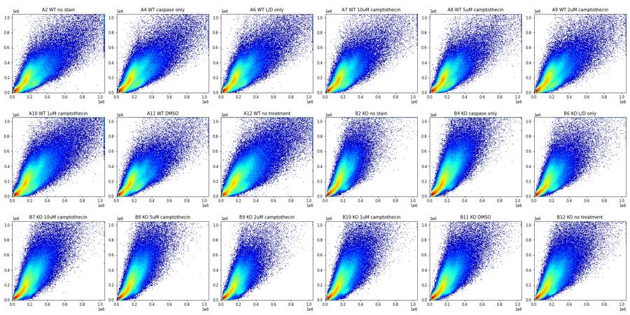
15
tool call · Read
{
"file_path": "/task/work/time_fsc.png"
}16
tool output
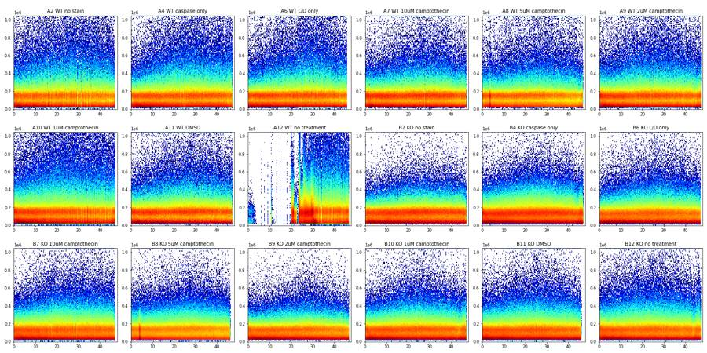
18
thinking
I've read the plan and QC'd the 18 files; well A12 (WT, no treatment) shows a flow disruption for roughly the first 22 s, and I'm now working out the gating.
19
tool call · Bash
cd /task/work; cat > p2.py <<'EOF'
from load import *
import matplotlib; matplotlib.use('Agg'); import matplotlib.pyplot as plt
df=load('Caspase_WT_KO_optimization_caspase_Group_A12.fcs')
h,e=np.histogram(df.t,bins=48,range=(0,48))
print(list(h))
for a,b in [(0,20),(20,26),(26,48),(30,48)]:
s=df[(df.t>=a)&(df.t<b)]
print(a,b,len(s), s['FSC-A'].median(), s['SSC-A'].median(), s['BL1-A'].median(), s['RL3-A'].median(), (s['FSC-A']/s['FSC-H']).median())
ref=load('Caspase_WT_KO_optimization_caspase_Group_A11.fcs')
print('A11', ref['FSC-A'].median(), ref['SSC-A'].median(), ref['BL1-A'].median(), ref['RL3-A'].median(), (ref['FSC-A']/ref['FSC-H']).median())
fig,ax=plt.subplots(1,4,figsize=(20,4))
ax[0].plot(e[:-1],h); ax[0].set_title('A12 events/s')
ax[1].hist2d(df.t, np.log10(np.clip(df['BL1-A'],1,None)), bins=[200,100], cmap='jet', norm=matplotlib.colors.LogNorm()); ax[1].set_title('BL1 vs time')
ax[2].hist2d(df.t, np.log10(np.clip(df['RL3-A'],1,None)), bins=[200,100], cmap='jet', norm=matplotlib.colors.LogNorm()); ax[2].set_title('RL3 vs time')
ax[3].hist2d(df.t, df['FSC-A']/df['FSC-H'], bins=[200,100], range=[[0,48],[0.5,3]],cmap='jet', norm=matplotlib.colors.LogNorm()); ax[3].set_title('FSC A/H vs time')
plt.savefig('a12.png',dpi=60)
EOF
python3 p2.py20
tool output
[372, 447, 217, 48, 1, 0, 47, 54, 0, 50, 757, 500, 3, 71, 37, 28, 55, 0, 63, 74, 13660, 12763, 5468, 11100, 20605, 19646, 22320, 21113, 19989, 22923, 21341, 16971, 14588, 13514, 12671, 12611, 13756, 12583, 12837, 12217, 13143, 13898, 13626, 12785, 13113, 13577, 13432, 0] 0 20 2824 114985.5 93394.5 1302.5 1573.5 1.2390797789867967 20 26 83242 137286.5 158906.0 5432.0 12173.0 1.1941523485384704 26 48 323008 145673.5 155742.5 5221.0 11639.0 1.2292295177023096 30 48 236663 146051.0 151125.0 5008.0 11143.0 1.238514173998045 A11 130591.5 118697.5 3698.0 7474.0 1.1885150475669497
21
tool call · Read
{
"file_path": "/task/work/a12.png"
}22
tool output
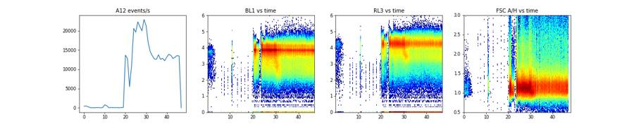
24
tool call · Bash
cd /task/work; cat > p3.py <<'EOF'
from load import *
import matplotlib; matplotlib.use('Agg'); import matplotlib.pyplot as plt
LN=matplotlib.colors.LogNorm()
fig, axes = plt.subplots(3,6, figsize=(24,12))
for ax,(i,r) in zip(axes.flat, lay.iterrows()):
df=load(r.file)
ax.hist2d(df['FSC-A'], df['FSC-H'], bins=200, range=[[0,1.05e6],[0,1.05e6]], cmap='jet', norm=matplotlib.colors.LogNorm())
ax.set_title(f'{r.well} {r["sample"]}')
plt.tight_layout(); plt.savefig('fsca_fsch.png', dpi=60)
fig, axes = plt.subplots(3,6, figsize=(24,12))
for ax,(i,r) in zip(axes.flat, lay.iterrows()):
df=load(r.file)
ax.hist2d(np.log10(np.clip(df['FSC-A'],1,None)), np.log10(np.clip(df['SSC-A'],1,None)), bins=200, range=[[3.5,6.1],[2.5,6.1]], cmap='jet', norm=matplotlib.colors.LogNorm())
ax.set_title(f'{r.well} {r["sample"]}')
plt.tight_layout(); plt.savefig('fsc_ssc_log.png', dpi=60)
EOF
python3 p3.py25
tool output
(Bash completed with no output)
26
tool call · Read
{
"file_path": "/task/work/fsc_ssc_log.png"
}27
tool output
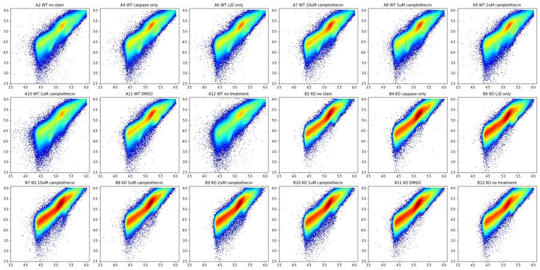
28
tool call · Read
{
"file_path": "/task/work/fsca_fsch.png"
}29
tool output
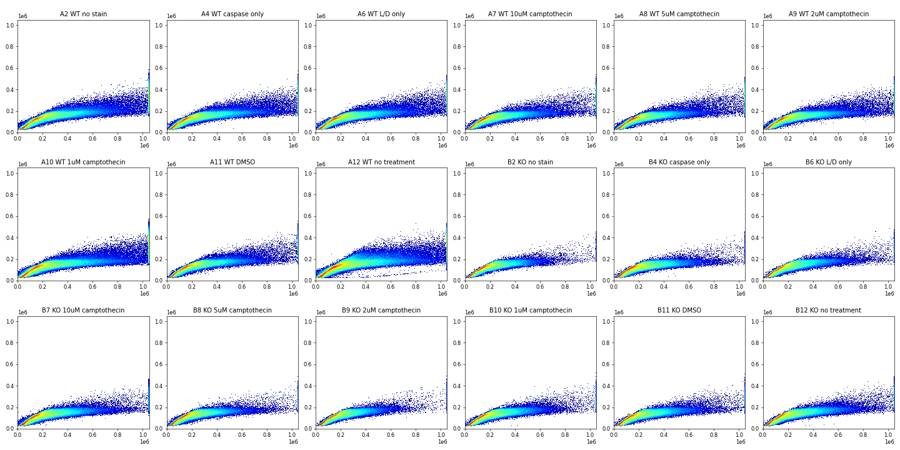
31
tool call · Bash
cd /task/work; cat > p4.py <<'EOF'
from load import *
import matplotlib; matplotlib.use('Agg'); import matplotlib.pyplot as plt
def asinh(x,c=200): return np.arcsinh(x/c)/np.log(10)
fig, axes = plt.subplots(3,6, figsize=(24,12))
for ax,(i,r) in zip(axes.flat, lay.iterrows()):
df=load(r.file)
m=(df['FSC-A']>6e4)&(df['FSC-A']<1e6)&(df['SSC-A']>2e4)&(df['SSC-A']<1e6)
s=df[m]
ax.hist2d(asinh(s['BL1-A']), asinh(s['RL3-A']), bins=200, range=[[-1,4.2],[-1,4.2]], cmap='jet', norm=matplotlib.colors.LogNorm())
ax.set_title(f'{r.well} {r["sample"]}'); ax.set_xlabel('BL1 casp'); ax.set_ylabel('RL3 zombie')
plt.tight_layout(); plt.savefig('bl1_rl3.png', dpi=60)
EOF
python3 p4.py32
tool output
(Bash completed with no output)
33
tool call · Read
{
"file_path": "/task/work/bl1_rl3.png"
}34
tool output
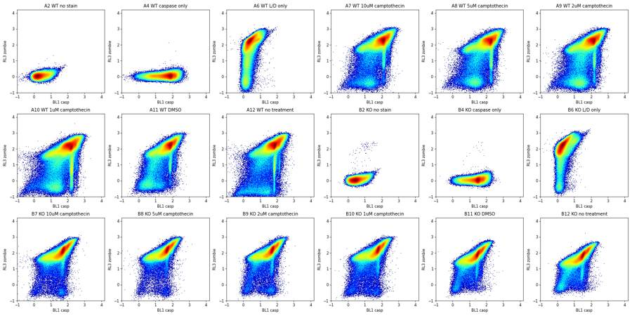
36
thinking
Most stained cells look dead on the Zombie NIR channel, and caspase-positive cells form a tight CellEvent-bright band. I'm setting the live and caspase-positive thresholds next.
37
tool call · Bash
cd /task/work; cat > p5.py <<'EOF'
from load import *
import matplotlib; matplotlib.use('Agg'); import matplotlib.pyplot as plt
def asinh(x,c=200): return np.arcsinh(x/c)/np.log(10)
fig, axes = plt.subplots(1,3, figsize=(24,6))
for i,r in lay.iterrows():
df=load(r.file)
m=(df['FSC-A']>6e4)&(df['FSC-A']<1e6)&(df['SSC-A']>2e4)&(df['SSC-A']<1e6)
s=df[m]
ls = '-' if r.genotype=='WT' else '--'
axes[0].hist(asinh(s['RL3-A']), bins=300, range=(-1,4), histtype='step', density=True, label=r.well, ls=ls)
live = s[s['RL3-A']<1000]
axes[1].hist(asinh(live['BL1-A']), bins=300, range=(-1,4), histtype='step', density=True, label=r.well, ls=ls)
axes[2].hist(asinh(s['BL1-A']), bins=300, range=(-1,4), histtype='step', density=True, label=r.well, ls=ls)
print(r.well, r['sample'], len(s), 'zombie<1000 %.1f%%'%(100*(s['RL3-A']<1000).mean()), 'live BL1 med', live['BL1-A'].median())
axes[0].set_title('RL3 cells'); axes[1].set_title('BL1 of RL3<1000'); axes[2].set_title('BL1 cells')
axes[0].legend(ncol=2)
plt.tight_layout(); plt.savefig('hists.png', dpi=60)
EOF
python3 p5.py38
tool output
A2 WT no stain 254384 zombie<1000 100.0% live BL1 med 145.0 A4 WT caspase only 308092 zombie<1000 100.0% live BL1 med 5960.0 A6 WT L/D only 287076 zombie<1000 13.5% live BL1 med 87.0 A7 WT 10uM camptothecin 285910 zombie<1000 9.5% live BL1 med 1719.0 A8 WT 5uM camptothecin 278167 zombie<1000 13.0% live BL1 med 2242.0 A9 WT 2uM camptothecin 301177 zombie<1000 15.2% live BL1 med 2086.0 A10 WT 1uM camptothecin 382993 zombie<1000 15.1% live BL1 med 2489.0 A11 WT DMSO 268362 zombie<1000 13.5% live BL1 med 718.0 A12 WT no treatment 308051 zombie<1000 12.6% live BL1 med 1426.5 B2 KO no stain 277450 zombie<1000 100.0% live BL1 med 264.0 B4 KO caspase only 427413 zombie<1000 100.0% live BL1 med 3008.0 B6 KO L/D only 295287 zombie<1000 5.9% live BL1 med 78.0 B7 KO 10uM camptothecin 409763 zombie<1000 3.4% live BL1 med 1597.0 B8 KO 5uM camptothecin 335820 zombie<1000 2.5% live BL1 med 1454.0 B9 KO 2uM camptothecin 271537 zombie<1000 5.2% live BL1 med 1076.0 B10 KO 1uM camptothecin 356586 zombie<1000 4.5% live BL1 med 1082.0 B11 KO DMSO 365989 zombie<1000 4.7% live BL1 med 478.0 B12 KO no treatment 356929 zombie<1000 7.0% live BL1 med 476.0
39
tool call · Read
{
"file_path": "/task/work/hists.png"
}40
tool output
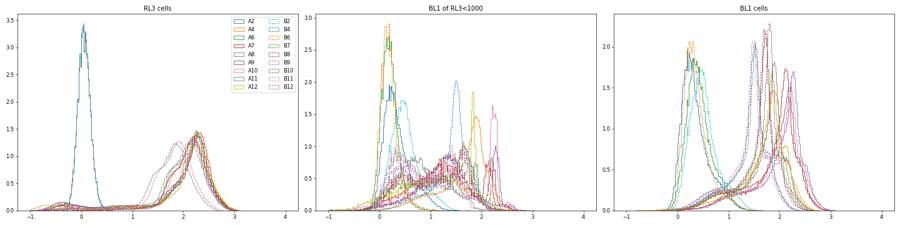
42
tool call · Bash
cd /task/work; cat > p6.py <<'EOF'
from load import *
import matplotlib; matplotlib.use('Agg'); import matplotlib.pyplot as plt
def asinh(x,c=200): return np.arcsinh(x/c)/np.log(10)
L=np.log10
wells=['A11','A7','A10','B11','B7','B10']
fig, axes = plt.subplots(4,6, figsize=(24,16))
for j,w in enumerate(wells):
r=lay[lay.well==w].iloc[0]; df=load(r.file)
df=df[(df['FSC-A']>2e4)&(df['SSC-A']>1e3)]
live=df[df['RL3-A']<1000]; dead=df[df['RL3-A']>3000]
cpos=live[live['BL1-A']>8000]; cneg=live[live['BL1-A']<5000]
for k,(sub,nm) in enumerate([(cneg,'live casp-'),(cpos,'live casp+'),(dead,'dead')]):
ax=axes[k,j]
ax.hist2d(L(sub['FSC-A'].clip(1)), L(sub['SSC-A'].clip(1)), bins=150, range=[[4.2,6.05],[3,6.05]], cmap='jet', norm=matplotlib.colors.LogNorm())
ax.set_title(f'{w} {r["sample"]} {nm} n={len(sub)}')
ax=axes[3,j]
ax.hist2d(asinh(live['BL1-A']), L(live['FSC-A'].clip(1)), bins=150, range=[[-0.5,3.5],[4.2,6.05]], cmap='jet', norm=matplotlib.colors.LogNorm())
ax.set_title(f'{w} live: BL1 vs logFSC')
plt.tight_layout(); plt.savefig('pops_scatter.png', dpi=55)
EOF
python3 p6.py43
tool output
(Bash completed with no output)
44
tool call · Read
{
"file_path": "/task/work/pops_scatter.png"
}45
tool output
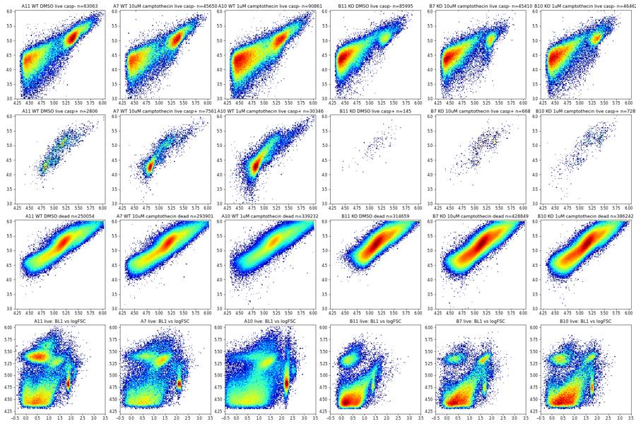
47
tool call · Bash
cd /task/work; cat > p7.py <<'EOF'
from load import *
import matplotlib; matplotlib.use('Agg'); import matplotlib.pyplot as plt
def asinh(x,c=200): return np.arcsinh(x/c)/np.log(10)
L=np.log10
wells=['A11','A7','B11','B7']
fig, axes = plt.subplots(4,4, figsize=(20,20))
for j,w in enumerate(wells):
r=lay[lay.well==w].iloc[0]; df=load(r.file)
live=df[df['RL3-A']<1000]; dead=df[df['RL3-A']>3000]
cpos=live[live['BL1-A']>8000]
ax=axes[0,j]; ax.hist2d(L(df['FSC-A'].clip(1)), L(df['SSC-A'].clip(1)), bins=200, range=[[4.2,6.05],[3,6.05]], cmap='Greys', norm=matplotlib.colors.LogNorm())
ax.scatter(L(cpos['FSC-A']), L(cpos['SSC-A']), s=0.3, c='r', alpha=0.3); ax.set_title(f'{w} all + live casp+ red')
for k,(sub,nm) in enumerate([(df,'all'),(live,'live'),(dead,'dead')]):
ax=axes[k+1,j]
ax.hist2d(sub['FSC-A'], sub['FSC-H'], bins=200, range=[[0,1.05e6],[0,5e5]], cmap='jet', norm=matplotlib.colors.LogNorm())
ax.set_title(f'{w} FSC-A vs FSC-H {nm}')
plt.tight_layout(); plt.savefig('sing.png', dpi=50)
EOF
python3 p7.py48
tool output
/usr/local/lib/python3.12/site-packages/pandas/core/arraylike.py:399: RuntimeWarning: invalid value encountered in log10 result = getattr(ufunc, method)(*inputs, **kwargs) /usr/local/lib/python3.12/site-packages/pandas/core/arraylike.py:399: RuntimeWarning: invalid value encountered in log10 result = getattr(ufunc, method)(*inputs, **kwargs) /usr/local/lib/python3.12/site-packages/pandas/core/arraylike.py:399: RuntimeWarning: invalid value encountered in log10 result = getattr(ufunc, method)(*inputs, **kwargs)
49
tool call · Read
{
"file_path": "/task/work/sing.png"
}50
tool output
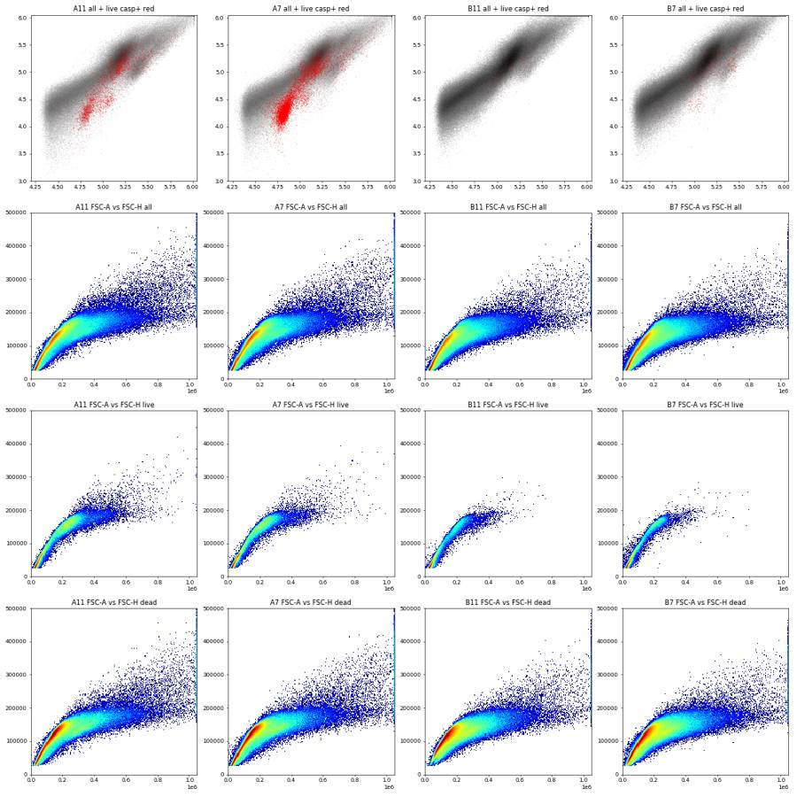
52
thinking
Scatter shows a distinct apoptotic cluster above the debris, so I'm placing the cell gate to keep it and drop the threshold debris, then setting the singlet, live and caspase gates.
53
tool call · Bash
cd /task/work; cat > p8.py <<'EOF'
from load import *
import matplotlib; matplotlib.use('Agg'); import matplotlib.pyplot as plt
def asinh(x,c=200): return np.arcsinh(x/c)/np.log(10)
L=np.log10
fig, axes = plt.subplots(2,3, figsize=(24,10))
for i,r in lay.iterrows():
df=load(r.file)
ls = '-' if r.genotype=='WT' else '--'
live=df[(df['RL3-A']<1000)&(df['SSC-A']>0)]
cp=live[live['BL1-A']>8000]
axes[0,0].hist(L(live['FSC-A']), bins=200, range=(4.2,6.05), histtype='step', label=r.well, ls=ls)
if r.treatment not in ('no stain','caspase only','L/D only'):
axes[0,1].hist(L(cp['FSC-A']), bins=200, range=(4.2,6.05), histtype='step', label=r.well, ls=ls)
axes[0,2].hist(L(cp['SSC-A']), bins=200, range=(3,6.05), histtype='step', label=r.well, ls=ls)
axes[1,0].hist(L(df['FSC-A'].clip(1)), bins=200, range=(4.2,6.05), histtype='step', label=r.well, ls=ls)
axes[1,1].hist(L(df['SSC-A'].clip(1)), bins=200, range=(2.5,6.05), histtype='step', label=r.well, ls=ls)
axes[0,0].set_title('logFSC live'); axes[0,1].set_title('logFSC live casp+'); axes[0,2].set_title('logSSC live casp+')
axes[1,0].set_title('logFSC all'); axes[1,1].set_title('logSSC all'); axes[0,1].legend()
plt.tight_layout(); plt.savefig('fsc_hist.png', dpi=55)
EOF
python3 p8.py 2>/dev/null54
tool output
(Bash completed with no output)
55
tool call · Read
{
"file_path": "/task/work/fsc_hist.png"
}56
tool output
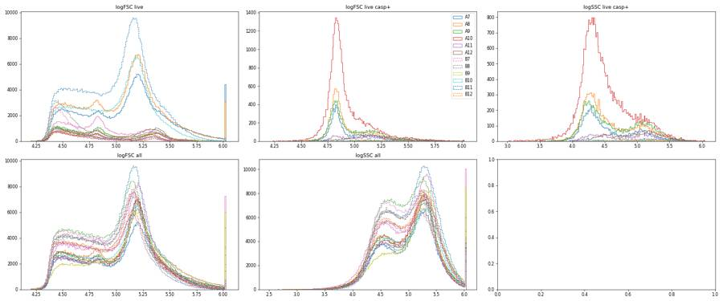
58
tool call · Bash
cd /task/work; cat > p9.py <<'EOF'
from load import *
import matplotlib; matplotlib.use('Agg'); import matplotlib.pyplot as plt
L=np.log10
wells=['A2','A6','A11','A7','A10','B2','B11','B7']
fig, axes = plt.subplots(3,8, figsize=(32,12))
for j,w in enumerate(wells):
r=lay[lay.well==w].iloc[0]; df=load(r.file)
c=df[(df['FSC-A']>40000)&(df['FSC-A']<1040000)&(df['SSC-A']>3000)&(df['SSC-A']<1040000)]
ax=axes[0,j]; ax.hist2d(L(c['FSC-A']), c['FSC-H']/c['FSC-A'], bins=200, range=[[4.5,6.05],[0,1.5]], cmap='jet', norm=matplotlib.colors.LogNorm()); ax.set_title(f'{w} FSC-H/FSC-A vs logFSC-A')
ax=axes[1,j]; ax.hist2d(L(c['FSC-A']), L(c['FSC-H']), bins=200, range=[[4.5,6.05],[4.0,6.0]], cmap='jet', norm=matplotlib.colors.LogNorm()); ax.set_title(f'{w} logFSC-H vs logFSC-A')
ax=axes[2,j]; ax.hist2d(L(c['SSC-A']), L(c['SSC-H'].clip(1)), bins=200, range=[[3.4,6.05],[3.4,6.05]], cmap='jet', norm=matplotlib.colors.LogNorm()); ax.set_title(f'{w} logSSC-H vs logSSC-A')
plt.tight_layout(); plt.savefig('sing2.png', dpi=45)
EOF
python3 p9.py 2>/dev/null59
tool output
(Bash completed with no output)
60
tool call · Read
{
"file_path": "/task/work/sing2.png"
}61
tool output
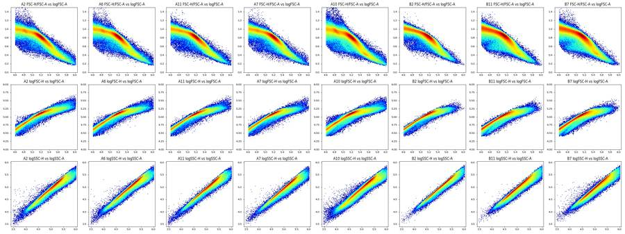
63
tool call · Bash
cd /task/work; cat > p10.py <<'EOF'
from load import *
L=np.log10
allc=[]
for i,r in lay.iterrows():
df=load(r.file)
c=df[(df['FSC-A']>40000)&(df['FSC-A']<1040000)&(df['SSC-A']>3000)&(df['SSC-A']<1040000)]
allc.append(c.sample(40000, random_state=0))
c=pd.concat(allc)
rat=c['FSC-H']/c['FSC-A']
edges=np.arange(4.6,6.05,0.1)
for a,b in zip(edges[:-1],edges[1:]):
m=(L(c['FSC-A'])>=a)&(L(c['FSC-A'])<b)
x=rat[m]
h,e=np.histogram(x,bins=100,range=(0,1.5)); mode=e[np.argmax(h)]+0.0075
print(f'{10**a:9.0f}-{10**b:9.0f} n={m.sum():6d} mode={mode:.3f} p5={x.quantile(.05):.3f} p25={x.quantile(.25):.3f} p50={x.median():.3f} p75={x.quantile(.75):.3f} p95={x.quantile(.95):.3f}')
EOF
python3 p10.py64
tool output
39811- 50119 n= 59661 mode=1.012 p5=0.812 p25=0.944 p50=0.993 p75=1.032 p95=1.098
50119- 63096 n= 60197 mode=0.982 p5=0.769 p25=0.924 p50=0.972 p75=1.008 p95=1.064
63096- 79433 n= 59225 mode=0.952 p5=0.706 p25=0.901 p50=0.946 p75=0.978 p95=1.026
79433- 100000 n= 58431 mode=0.937 p5=0.651 p25=0.867 p50=0.916 p75=0.948 p95=0.992
100000- 125893 n= 82626 mode=0.892 p5=0.658 p25=0.838 p50=0.881 p75=0.910 p95=0.951
125893- 158489 n=130041 mode=0.847 p5=0.667 p25=0.794 p50=0.832 p75=0.860 p95=0.896
158489- 199526 n=110456 mode=0.787 p5=0.584 p25=0.711 p50=0.760 p75=0.795 p95=0.832
199526- 251189 n= 62163 mode=0.682 p5=0.476 p25=0.586 p50=0.652 p75=0.702 p95=0.754
251189- 316228 n= 40305 mode=0.472 p5=0.407 p25=0.465 p50=0.529 p75=0.593 p95=0.664
316228- 398107 n= 25942 mode=0.412 p5=0.348 p25=0.398 p50=0.433 p75=0.482 p95=0.559
398107- 501187 n= 15752 mode=0.367 p5=0.293 p25=0.341 p50=0.377 p75=0.414 p95=0.486
501187- 630957 n= 8783 mode=0.307 p5=0.250 p25=0.289 p50=0.321 p75=0.360 p95=0.448
630957- 794328 n= 4494 mode=0.263 p5=0.214 p25=0.248 p50=0.278 p75=0.321 p95=0.409
794328- 1000000 n= 1773 mode=0.217 p5=0.186 p25=0.214 p50=0.242 p75=0.295 p95=0.38066
tool call · Bash
cd /task/work; cat > gates_np.py <<'EOF'
from load import *
from matplotlib.path import Path
SING=[(40000,32000),(100000,72000),(170000,110000),(250000,125000),(400000,150000),(400000,240000),(250000,230000),(150000,165000),(100000,120000),(40000,55000)]
def cells(df): return (df['FSC-A']>=40000)&(df['FSC-A']<1040000)&(df['SSC-A']>=3000)&(df['SSC-A']<1040000)
def sing(df): return Path(SING).contains_points(df[['FSC-A','FSC-H']].values)
EOF
cat > p11.py <<'EOF'
from gates_np import *
import matplotlib; matplotlib.use('Agg'); import matplotlib.pyplot as plt
L=np.log10
def asinh(x,c=200): return np.arcsinh(x/c)/np.log(10)
wells=['A2','A6','A11','A7','B2','B6','B11','B7']
fig, axes = plt.subplots(2,8, figsize=(32,8))
P=np.array(SING+[SING[0]])
for j,w in enumerate(wells):
r=lay[lay.well==w].iloc[0]; df=load(r.file); c=df[cells(df)]
ax=axes[0,j]; ax.hist2d(c['FSC-A'], c['FSC-H'], bins=200, range=[[0,1.05e6],[0,3.5e5]], cmap='jet', norm=matplotlib.colors.LogNorm()); ax.plot(P[:,0],P[:,1],'k-'); ax.set_title(f'{w} sing {sing(c).mean()*100:.1f}%')
ax=axes[1,j]; ax.hist2d(c['FSC-A'], c['FSC-H'], bins=200, range=[[0,5e5],[0,3e5]], cmap='jet', norm=matplotlib.colors.LogNorm()); ax.plot(P[:,0],P[:,1],'k-')
plt.tight_layout(); plt.savefig('sing3.png', dpi=45)
EOF
python3 p11.py 2>/dev/null67
tool output
(Bash completed with no output)
68
tool call · Read
{
"file_path": "/task/work/sing3.png"
}69
tool output
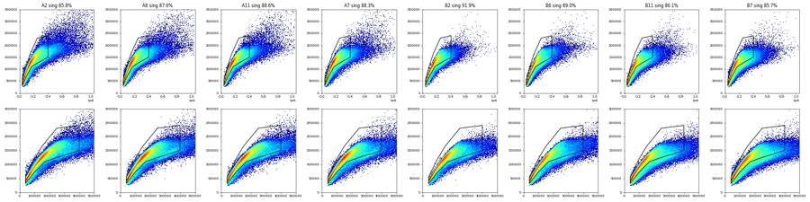
71
agent
Status: singlet gate drafted (FSC-A vs FSC-H, keeps about 86–92% of cells). I'm now setting the Zombie NIR live threshold and the CellEvent-positive threshold from the controls.
72
tool call · Bash
cd /task/work; cat > p12.py <<'EOF'
from gates_np import *
import matplotlib; matplotlib.use('Agg'); import matplotlib.pyplot as plt
def asinh(x,c=200): return np.arcsinh(x/c)/np.log(10)
fig, axes = plt.subplots(1,2, figsize=(20,6))
for i,r in lay.iterrows():
df=load(r.file); s=df[cells(df)]; s=s[sing(s)]
q=np.percentile(s['RL3-A'],[50,99,99.5,99.9]); qb=np.percentile(s['BL1-A'],[50,99,99.5,99.9])
print(r.well, r['sample'], len(s), 'RL3 p50/99/99.5/99.9', q.round(0), 'BL1', qb.round(0), 'RL3<800 %.1f <1500 %.1f <3000 %.1f'%tuple(100*(s['RL3-A']<t).mean() for t in (800,1500,3000)))
ls='-' if r.genotype=='WT' else '--'
axes[0].hist(asinh(s['RL3-A']), bins=250, range=(-1,4), histtype='step', label=r.well, ls=ls)
axes[1].hist(asinh(s['RL3-A']), bins=250, range=(-1,4), histtype='step', label=r.well, ls=ls)
axes[1].set_yscale('log'); axes[0].legend(ncol=2)
for ax in axes:
for t in (800,1500,3000): ax.axvline(asinh(t), color='k', lw=0.5)
plt.tight_layout(); plt.savefig('rl3.png', dpi=55)
EOF
python3 p12.py 2>/dev/null73
tool output
A2 WT no stain 256856 RL3 p50/99/99.5/99.9 [ 17. 154. 172. 215.] BL1 [ 115. 1095. 1297. 1818.] RL3<800 100.0 <1500 100.0 <3000 100.0 A4 WT caspase only 317865 RL3 p50/99/99.5/99.9 [ 18. 155. 173. 213.] BL1 [ 4759. 20303. 23426. 31530.] RL3<800 100.0 <1500 100.0 <3000 100.0 A6 WT L/D only 296309 RL3 p50/99/99.5/99.9 [11267. 48240. 55191. 72198.] BL1 [ 168. 1129. 1325. 1856.] RL3<800 17.0 <1500 19.7 <3000 25.0 A7 WT 10uM camptothecin 292952 RL3 p50/99/99.5/99.9 [13254. 54812. 63133. 84317.] BL1 [ 8807. 34096. 39081. 51056.] RL3<800 11.7 <1500 13.6 <3000 17.4 A8 WT 5uM camptothecin 289540 RL3 p50/99/99.5/99.9 [11759. 49239. 56438. 74122.] BL1 [10867. 43788. 49564. 64233.] RL3<800 15.9 <1500 18.3 <3000 22.8 A9 WT 2uM camptothecin 311318 RL3 p50/99/99.5/99.9 [11172. 50115. 57107. 75258.] BL1 [ 8182. 36268. 41754. 54994.] RL3<800 18.3 <1500 20.7 <3000 25.4 A10 WT 1uM camptothecin 381463 RL3 p50/99/99.5/99.9 [ 8742. 40373. 46043. 59305.] BL1 [ 9098. 40195. 45437. 59594.] RL3<800 20.2 <1500 23.3 <3000 30.4 A11 WT DMSO 277147 RL3 p50/99/99.5/99.9 [10652. 45463. 52088. 67684.] BL1 [ 5084. 19873. 22886. 30993.] RL3<800 15.5 <1500 18.0 <3000 23.7 A12 WT no treatment 288972 RL3 p50/99/99.5/99.9 [12838. 49520. 55884. 71360.] BL1 [ 5429. 21340. 24421. 33219.] RL3<800 16.0 <1500 18.7 <3000 23.1 B2 KO no stain 300179 RL3 p50/99/99.5/99.9 [ 19. 166. 189. 251.] BL1 [ 221. 1728. 2017. 2749.] RL3<800 100.0 <1500 100.0 <3000 100.0 B4 KO caspase only 438587 RL3 p50/99/99.5/99.9 [ 19. 165. 186. 237.] BL1 [ 2556. 9871. 11345. 14990.] RL3<800 100.0 <1500 100.0 <3000 100.0 B6 KO L/D only 322767 RL3 p50/99/99.5/99.9 [10359. 55934. 64310. 85598.] BL1 [ 126. 1270. 1554. 2217.] RL3<800 7.3 <1500 9.0 <3000 14.0 B7 KO 10uM camptothecin 423765 RL3 p50/99/99.5/99.9 [ 8631. 44466. 51059. 65783.] BL1 [ 4013. 15904. 18268. 23878.] RL3<800 4.8 <1500 6.7 <3000 16.9 B8 KO 5uM camptothecin 355319 RL3 p50/99/99.5/99.9 [10847. 51160. 58644. 74172.] BL1 [ 3949. 15048. 17313. 22848.] RL3<800 3.6 <1500 4.9 <3000 11.9 B9 KO 2uM camptothecin 303748 RL3 p50/99/99.5/99.9 [ 8971. 47555. 55364. 73144.] BL1 [ 3566. 14798. 17274. 23786.] RL3<800 6.6 <1500 8.3 <3000 15.7 B10 KO 1uM camptothecin 381638 RL3 p50/99/99.5/99.9 [ 9898. 49584. 57119. 73147.] BL1 [ 4666. 17937. 20715. 27307.] RL3<800 6.4 <1500 8.1 <3000 15.0 B11 KO DMSO 384543 RL3 p50/99/99.5/99.9 [ 5231. 27725. 32248. 41695.] BL1 [ 2214. 9259. 10759. 14695.] RL3<800 6.6 <1500 12.4 <3000 32.3 B12 KO no treatment 374721 RL3 p50/99/99.5/99.9 [ 4434. 23782. 27639. 36180.] BL1 [ 2434. 10436. 12278. 16573.] RL3<800 9.3 <1500 18.3 <3000 38.3
74
tool call · Read
{
"file_path": "/task/work/rl3.png"
}75
tool output
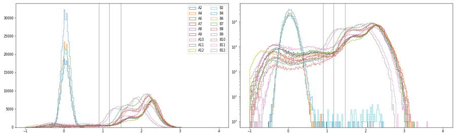
77
tool call · Bash
cd /task/work; cat > p13.py <<'EOF'
from gates_np import *
import matplotlib; matplotlib.use('Agg'); import matplotlib.pyplot as plt
L=np.log10
def asinh(x,c=200): return np.arcsinh(x/c)/np.log(10)
fig, axes = plt.subplots(3,6, figsize=(30,15))
fig2, ax2 = plt.subplots(2,1, figsize=(16,10))
for ax,(i,r) in zip(axes.flat, lay.iterrows()):
df=load(r.file); s=df[cells(df)]; s=s[sing(s)]; lv=s[s['RL3-A']<1000]
ax.hist2d(asinh(lv['BL1-A']), L(lv['SSC-A']), bins=150, range=[[-0.5,3.5],[3.4,6.05]], cmap='jet', norm=matplotlib.colors.LogNorm())
ax.set_title(f'{r.well} {r["sample"]} live n={len(lv)}'); ax.set_xlabel('asinh BL1'); ax.set_ylabel('log SSC')
for t in (3000,5000,8000): ax.axvline(asinh(t),color='k',lw=0.5)
k=0 if r.genotype=='WT' else 1
if r.treatment!='no stain':
ax2[k].hist(asinh(lv['BL1-A']), bins=250, range=(-0.5,3.5), histtype='step', label=f'{r.well} {r.treatment}', density=True, lw=1.5 if r.treatment in ('DMSO','10uM camptothecin','L/D only') else 0.8)
for a in ax2:
a.legend(); a.set_yscale('log'); a.set_ylim(1e-3,5)
for t in (2000,3000,5000,8000): a.axvline(asinh(t),color='k',lw=0.5)
fig.tight_layout(); fig.savefig('live_bl1_ssc.png', dpi=45)
fig2.tight_layout(); fig2.savefig('live_bl1_hist.png', dpi=60)
EOF
python3 p13.py 2>/dev/null78
tool output
(Bash completed with no output)
79
tool call · Read
{
"file_path": "/task/work/live_bl1_ssc.png"
}80
tool output
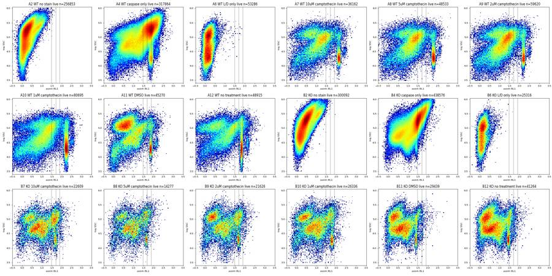
81
tool call · Read
{
"file_path": "/task/work/live_bl1_hist.png"
}82
tool output
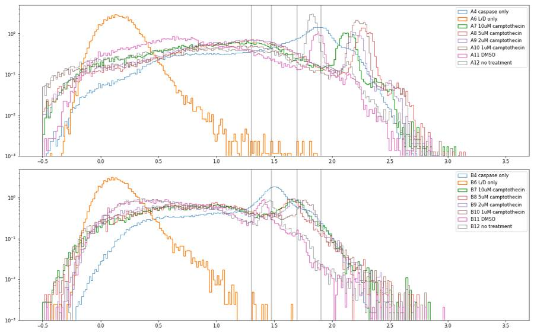
84
tool call · Bash
cd /task/work; cat > p14.py <<'EOF'
from gates_np import *
def asinh(x,c=200): return np.arcsinh(x/c)/np.log(10)
rows=[]
for i,r in lay.iterrows():
df=load(r.file); s=df[cells(df)]; s=s[sing(s)]
lv=s[s['RL3-A']<1000]
d=dict(well=r.well, s=r['sample'], n_sing=len(s), live_pct=100*len(lv)/len(s), n_live=len(lv))
for t in (1500,2000,2500,3000,4000,5000,6000,8000):
d[f'>{t}']=round(100*(lv['BL1-A']>t).mean(),2)
# line: low SSC (<40k) events, peak position
lo=lv[(lv['SSC-A']<40000)]
h,e=np.histogram(asinh(lo['BL1-A']),bins=200,range=(0.8,2.8)); pk=e[np.argmax(h)]+0.005
d['peak_asinh']=round(pk,2); d['peak_val']=round(200*np.sinh(pk*np.log(10)))
rows.append(d)
pd.set_option('display.width',250)
print(pd.DataFrame(rows).to_string())
EOF
python3 p14.py85
tool output
well s n_sing live_pct n_live >1500 >2000 >2500 >3000 >4000 >5000 >6000 >8000 peak_asinh peak_val 0 A2 WT no stain 256856 99.998832 256853 0.25 0.06 0.02 0.01 0.00 0.00 0.00 0.00 0.86 702 1 A4 WT caspase only 317865 99.999685 317864 72.76 68.45 64.76 61.38 54.92 48.41 41.45 24.93 1.93 8609 2 A6 WT L/D only 296309 17.983254 53286 0.09 0.06 0.05 0.04 0.02 0.01 0.01 0.00 0.82 653 3 A7 WT 10uM camptothecin 292952 12.344002 36162 48.55 41.20 35.68 31.57 26.28 23.54 21.67 19.60 2.10 12734 4 A8 WT 5uM camptothecin 289540 16.762105 48533 56.89 48.69 42.18 37.45 31.31 27.73 25.63 23.38 2.26 18407 5 A9 WT 2uM camptothecin 311318 19.150836 59620 52.99 44.45 37.75 32.73 25.92 22.25 20.10 17.72 2.18 15310 6 A10 WT 1uM camptothecin 381463 21.154083 80695 57.44 51.36 46.73 43.38 39.06 36.79 35.47 33.88 2.22 16405 7 A11 WT DMSO 277147 16.334292 45270 29.57 24.48 21.35 19.32 16.85 15.34 14.19 5.55 1.87 7498 8 A12 WT no treatment 288972 16.927246 48915 50.17 45.32 41.78 38.98 35.14 32.94 29.99 5.68 1.81 6530 9 B2 KO no stain 300179 99.971017 300092 1.69 0.51 0.16 0.06 0.01 0.00 0.00 0.00 0.82 653 10 B4 KO caspase only 438587 99.997492 438576 65.60 59.22 51.12 39.24 19.00 11.58 7.35 2.50 0.96 890 11 B6 KO L/D only 322767 7.843429 25316 0.02 0.02 0.01 0.00 0.00 0.00 0.00 0.00 0.80 623 12 B7 KO 10uM camptothecin 423765 5.335268 22609 37.85 32.15 28.80 25.70 19.28 11.52 6.30 2.72 1.70 5068 13 B8 KO 5uM camptothecin 355319 4.018080 14277 35.62 29.61 25.70 22.78 16.67 8.15 4.75 2.18 1.62 4215 14 B9 KO 2uM camptothecin 303748 7.119718 21626 36.00 30.67 27.24 24.47 19.19 11.27 5.95 2.46 1.66 4622 15 B10 KO 1uM camptothecin 381638 6.900780 26336 35.29 29.17 25.33 22.41 18.05 14.45 8.54 2.38 1.78 5955 16 B11 KO DMSO 384543 7.655581 29439 18.79 15.53 10.38 5.50 2.91 1.64 0.78 0.46 1.41 2596 17 B12 KO no treatment 374721 11.011926 41264 20.72 17.36 14.35 8.11 3.45 1.98 1.08 0.46 1.43 2719
87
tool call · Bash
cd /task/work; cat > p15.py <<'EOF'
from gates_np import *
import matplotlib; matplotlib.use('Agg'); import matplotlib.pyplot as plt
def asinh(x,c=200): return np.arcsinh(x/c)/np.log(10)
L=np.log10
fig,axes=plt.subplots(2,4,figsize=(24,10))
for j,w in enumerate(['A12','A11']):
r=lay[lay.well==w].iloc[0]; df=load(r.file); s=df[cells(df)]; s=s[sing(s)]; lv=s[s['RL3-A']<1000]
for (a,b) in [(0,20),(20,30),(30,40),(40,48)]:
x=lv[(lv.t>=a)&(lv.t<b)]; y=s[(s.t>=a)&(s.t<b)]
print(w,a,b,'sing',len(y),'live%%=%.1f'%(100*len(x)/max(len(y),1)), 'casp>2000 %.1f >3000 %.1f >8000 %.1f'%tuple(100*(x['BL1-A']>t).mean() for t in (2000,3000,8000)), 'SSCmed',y['SSC-A'].median())
axes[j,0].hist2d(lv.t, asinh(lv['BL1-A']), bins=[100,150], range=[[0,48],[-0.5,3]], cmap='jet', norm=matplotlib.colors.LogNorm()); axes[j,0].set_title(w+' live BL1 vs t')
axes[j,1].hist2d(s.t, asinh(s['RL3-A']), bins=[100,150], range=[[0,48],[-1,3.5]], cmap='jet', norm=matplotlib.colors.LogNorm()); axes[j,1].set_title(w+' sing RL3 vs t')
axes[j,2].hist2d(s.t, L(s['SSC-A']), bins=[100,150], range=[[0,48],[3.4,6.05]], cmap='jet', norm=matplotlib.colors.LogNorm()); axes[j,2].set_title(w+' sing SSC vs t')
late=lv[lv.t>30]
axes[j,3].hist2d(asinh(late['BL1-A']), L(late['SSC-A']), bins=150, range=[[-0.5,3.5],[3.4,6.05]], cmap='jet', norm=matplotlib.colors.LogNorm()); axes[j,3].set_title(w+' live t>30 BL1 vs SSC')
plt.tight_layout(); plt.savefig('a12b.png',dpi=50)
EOF
python3 p15.py 2>/dev/null88
tool output
A12 0 20 sing 1636 live%=25.6 casp>2000 43.1 >3000 34.2 >8000 4.1 SSCmed 133770.0 A12 20 30 sing 125118 live%=17.0 casp>2000 43.7 >3000 36.5 >8000 6.3 SSCmed 164150.5 A12 30 40 sing 97491 live%=16.6 casp>2000 46.1 >3000 40.4 >8000 5.4 SSCmed 156452.0 A12 40 48 sing 64727 live%=17.1 casp>2000 47.4 >3000 41.9 >8000 4.8 SSCmed 154634.0 A11 0 20 sing 120106 live%=16.4 casp>2000 24.5 >3000 19.2 >8000 7.7 SSCmed 131894.0 A11 20 30 sing 61079 live%=16.2 casp>2000 25.4 >3000 20.1 >8000 4.6 SSCmed 142191.0 A11 30 40 sing 58215 live%=16.6 casp>2000 24.0 >3000 19.3 >8000 3.7 SSCmed 140798.0 A11 40 48 sing 37747 live%=16.2 casp>2000 23.6 >3000 18.4 >8000 3.3 SSCmed 138203.0
89
tool call · Read
{
"file_path": "/task/work/a12b.png"
}90
tool output
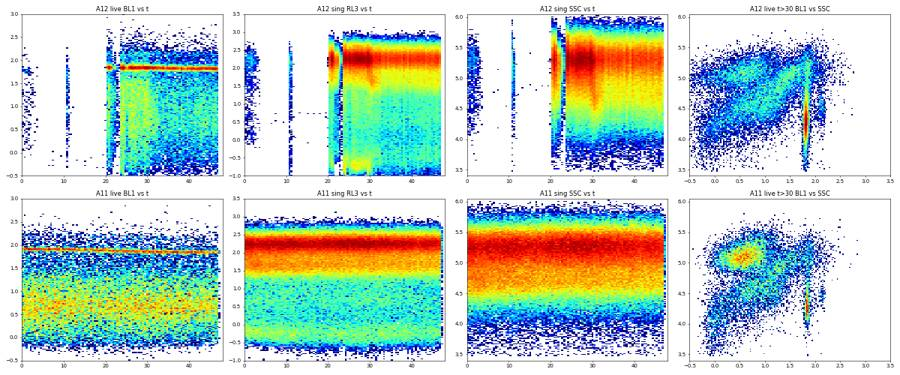
92
agent
Status: A12's clog is confirmed, and its post-clog profile also disagrees with the WT DMSO well, so I'll exclude it. Next I'm checking flow stability in every well, then building the FlowKit gates.
93
tool call · Bash
cd /task/work; cat > p16.py <<'EOF'
from gates_np import *
import flowio
for i,r in lay.iterrows():
df=load(r.file); fd=flowio.FlowData('/task/inputs/raw/'+r.file)
h,_=np.histogram(df.t,bins=np.arange(0,47,1.0))
h=h[1:-1]
print(f'{r.well:4s} n={len(df):6d} rate_med={np.median(h):7.0f}/s min={h.min():6d} max={h.max():6d} cv={h.std()/h.mean()*100:5.1f}% coinc={100*int(fd.text["#coincidentcount"])/len(df):5.1f}% first5s={h[:4].mean():7.0f} last5s={h[-4:].mean():7.0f} dur={df.t.max():.1f}')
EOF
python3 p16.py94
tool output
A2 n=365736 rate_med= 7968/s min= 6544 max= 8559 cv= 5.9% coinc= 9.0% first5s= 8262 last5s= 7023 dur=47.0 A4 n=440820 rate_med= 9510/s min= 8449 max= 10043 cv= 3.4% coinc= 9.3% first5s= 9447 last5s= 8746 dur=47.1 A6 n=412724 rate_med= 9121/s min= 7515 max= 9741 cv= 5.7% coinc= 9.2% first5s= 9016 last5s= 7702 dur=46.1 A7 n=395514 rate_med= 8554/s min= 7127 max= 9212 cv= 5.5% coinc= 7.9% first5s= 9030 last5s= 7243 dur=47.1 A8 n=384992 rate_med= 8504/s min= 6222 max= 12591 cv= 11.6% coinc= 7.5% first5s= 9694 last5s= 6730 dur=46.9 A9 n=428254 rate_med= 9134/s min= 7638 max= 10328 cv= 6.4% coinc= 9.2% first5s= 10063 last5s= 8015 dur=47.2 A10 n=552590 rate_med= 11839/s min= 9391 max= 13883 cv= 9.2% coinc= 12.5% first5s= 13360 last5s= 9992 dur=47.2 A11 n=377220 rate_med= 8156/s min= 7057 max= 8473 cv= 4.2% coinc= 7.5% first5s= 8304 last5s= 7344 dur=47.1 A12 n=409074 rate_med= 12400/s min= 0 max= 22923 cv= 93.2% coinc= 14.1% first5s= 178 last5s= 13356 dur=46.9 B2 n=392795 rate_med= 8416/s min= 7834 max= 8910 cv= 3.6% coinc= 6.6% first5s= 8176 last5s= 7901 dur=47.1 B4 n=605670 rate_med= 13176/s min= 10957 max= 13619 cv= 5.5% coinc= 10.2% first5s= 13430 last5s= 11330 dur=47.1 B6 n=457465 rate_med= 9914/s min= 8880 max= 10556 cv= 4.1% coinc= 7.9% first5s= 9781 last5s= 9085 dur=47.0 B7 n=612174 rate_med= 13061/s min= 11806 max= 14304 cv= 5.2% coinc= 10.7% first5s= 14049 last5s= 12058 dur=47.1 B8 n=493435 rate_med= 10816/s min= 9156 max= 15521 cv= 9.3% coinc= 8.5% first5s= 12745 last5s= 9392 dur=46.1 B9 n=425772 rate_med= 9336/s min= 7831 max= 9932 cv= 6.4% coinc= 6.7% first5s= 9780 last5s= 8034 dur=47.0 B10 n=539106 rate_med= 11644/s min= 9447 max= 12446 cv= 5.5% coinc= 8.8% first5s= 12221 last5s= 10022 dur=47.1 B11 n=561171 rate_med= 12415/s min= 10702 max= 13143 cv= 5.1% coinc= 9.9% first5s= 12980 last5s= 11065 dur=46.1 B12 n=538223 rate_med= 11435/s min= 9237 max= 12807 cv= 6.8% coinc= 9.5% first5s= 12620 last5s= 10178 dur=47.2
96
tool call · Bash
cd /task/work; cat > p17.py <<'EOF'
from gates_np import *
for w in ['A8','B8','A10']:
r=lay[lay.well==w].iloc[0]; df=load(r.file)
h,_=np.histogram(df.t,bins=np.arange(0,48,0.5)); print(w, list(h[:20]))
s=df[cells(df)]; s=s[sing(s)]; lv=s[s['RL3-A']<1000]
for a,b in [(0,2.5),(2.5,5),(5,48)]:
x=lv[(lv.t>=a)&(lv.t<b)]; y=s[(s.t>=a)&(s.t<b)]
print(' ',a,b,len(y),'live%%=%.1f casp>2000=%.1f'%(100*len(x)/len(y),100*(x['BL1-A']>2000).mean()))
EOF
python3 p17.py97
tool output
A8 [4123, 4335, 4251, 4478, 4535, 4340, 5116, 7475, 4349, 4231, 4333, 4303, 4309, 4403, 4206, 4299, 4263, 4356, 4237, 4391] 0 2.5 16996 live%=17.5 casp>2000=48.9 2.5 5 19287 live%=17.2 casp>2000=46.6 5 48 253257 live%=16.7 casp>2000=48.8 B8 [5538, 5675, 5691, 5787, 5623, 5706, 5588, 7065, 9982, 5539, 5501, 5520, 5489, 5587, 5579, 5685, 5627, 5601, 5603, 5640] 0 2.5 20765 live%=4.3 casp>2000=31.7 2.5 5 24416 live%=4.3 casp>2000=28.5 5 48 310138 live%=4.0 casp>2000=29.6 A10 [6290, 6709, 6940, 6943, 6726, 6694, 6565, 6527, 6576, 6467, 6489, 6357, 6315, 6644, 6367, 6419, 6349, 6538, 6476, 6620] 0 2.5 24549 live%=23.6 casp>2000=49.5 2.5 5 22982 live%=22.6 casp>2000=48.0 5 48 333932 live%=20.9 casp>2000=51.8
99
tool call · Bash
cd /task/work; cat > p18.py <<'EOF'
from gates_np import *
import matplotlib; matplotlib.use('Agg'); import matplotlib.pyplot as plt
fig,axes=plt.subplots(1,2,figsize=(20,6))
for i,r in lay.iterrows():
if r.treatment in ('no stain','L/D only'): continue
df=load(r.file); s=df[cells(df)]; s=s[sing(s)]; lv=s[(s['RL3-A']<1000)&(s['SSC-A']<40000)]
ax=axes[0 if r.genotype=='WT' else 1]
ax.hist(lv['BL1-A'], bins=np.geomspace(300,60000,250), histtype='step', label=f'{r.well} {r.treatment}')
for ax in axes: ax.set_xscale('log'); ax.axvline(2000,color='k'); ax.legend(); ax.set_title('BL1 of live singlets with SSC<40k')
plt.tight_layout(); plt.savefig('line.png',dpi=60)
EOF
python3 p18.py 2>/dev/null100
tool output
(Bash completed with no output)
101
tool call · Read
{
"file_path": "/task/work/line.png"
}102
tool output
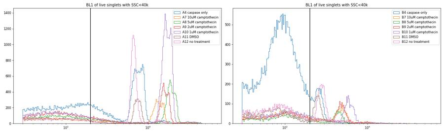
104
thinking
Thresholds are set: Live is Zombie NIR (RL3-A) below 1000, and CellEvent+ is BL1-A at or above 2000, which keeps L/D-only background at or under 0.06%. Building the FlowKit strategy next.
105
tool call · Bash
cd /task/work; python3 -c "import flowkit as fk; print(fk.__version__); import inspect; print(inspect.signature(fk.Dimension.__init__)); print(inspect.signature(fk.gates.PolygonGate.__init__)); print(inspect.signature(fk.gates.RectangleGate.__init__)); print(inspect.signature(fk.GatingStrategy.add_gate))"
106
tool output
1.2.3 (self, dimension_id, compensation_ref='uncompensated', transformation_ref=None, range_min=None, range_max=None) (self, gate_name, dimensions, vertices, use_complement=False) (self, gate_name, dimensions, use_complement=False) (self, gate, gate_path, sample_id=None)
107
tool call · Bash
mkdir -p /task/outputs; cd /task/work; cat > build_gates.py <<'EOF'
import flowkit as fk, pandas as pd, numpy as np
OUT='/task/outputs/'
U='uncompensated'
gs = fk.GatingStrategy()
# 1. Cells: exclude threshold-level debris (FSC-A < 40k) and saturated scatter events
cells = fk.gates.RectangleGate('Cells', [
fk.Dimension('FSC-A', compensation_ref=U, range_min=40000, range_max=1040000),
fk.Dimension('SSC-A', compensation_ref=U, range_min=3000, range_max=1040000)])
gs.add_gate(cells, gate_path=('root',))
# 2. Singlets: FSC-A vs FSC-H main band
SING=[(40000,32000),(100000,72000),(170000,110000),(250000,125000),(400000,150000),(400000,240000),(250000,230000),(150000,165000),(100000,120000),(40000,55000)]
sing = fk.gates.PolygonGate('Singlets', [fk.Dimension('FSC-A', compensation_ref=U), fk.Dimension('FSC-H', compensation_ref=U)], [list(v) for v in SING])
gs.add_gate(sing, gate_path=('root','Cells'))
# 3. Live / Dead on Zombie NIR (RL3-A)
live = fk.gates.RectangleGate('Live', [fk.Dimension('RL3-A', compensation_ref=U, range_max=1000)])
dead = fk.gates.RectangleGate('Dead', [fk.Dimension('RL3-A', compensation_ref=U, range_min=1000)])
gs.add_gate(live, gate_path=('root','Cells','Singlets'))
gs.add_gate(dead, gate_path=('root','Cells','Singlets'))
# 4. CellEvent caspase-3/7 positive (BL1-A)
cp = fk.gates.RectangleGate('Casp_pos', [fk.Dimension('BL1-A', compensation_ref=U, range_min=2000)])
gs.add_gate(cp, gate_path=('root','Cells','Singlets','Live'))
dcp = fk.gates.RectangleGate('Dead_Casp_pos', [fk.Dimension('BL1-A', compensation_ref=U, range_min=2000)])
gs.add_gate(dcp, gate_path=('root','Cells','Singlets','Dead'))
with open(OUT+'gates.xml','wb') as fh:
fk.export_gatingml(gs, fh)
print(gs.get_gate_hierarchy())
EOF
python3 build_gates.py108
tool output
root
╰── Cells
╰── Singlets
├── Live
│ ╰── Casp_pos
╰── Dead
╰── Dead_Casp_pos110
tool call · Bash
cd /task/work; cat > count.py <<'EOF'
import flowkit as fk, pandas as pd, numpy as np
OUT='/task/outputs/'
lay=pd.read_csv('/task/inputs/plate_layout.csv')
gs=fk.parse_gating_xml(OUT+'gates.xml')
ROLE={'Cells':'cells','Singlets':'singlets','Live':'live','Casp_pos':'marker_positive','Dead':'other','Dead_Casp_pos':'other'}
ORDER=['Cells','Singlets','Live','Casp_pos','Dead','Dead_Casp_pos']
rows=[]
for i,r in lay.iterrows():
s=fk.Sample('/task/inputs/raw/'+r.file)
res=gs.gate_sample(s)
rep=res.report
n=s.event_count
rows.append(dict(file=r.file,well=r.well,population='all_events',role='other',parent='none',count=n,pct_of_parent=''))
cnt={'all_events':n}
for g in ORDER:
sub=rep[rep.gate_name==g]; assert len(sub)==1
c=int(sub['count'].iloc[0]); cnt[g]=c
par=sub['parent'].iloc[0]; par='all_events' if par=='root' else par
rows.append(dict(file=r.file,well=r.well,population=g,role=ROLE[g],parent=par,count=c,pct_of_parent=round(100*c/cnt[par],4) if cnt[par]>0 else ''))
df=pd.DataFrame(rows)
df.to_csv(OUT+'counts.csv',index=False)
w=df.pivot(index='well',columns='population',values='count')
w=w.loc[lay.well]
print(w[['all_events']+ORDER])
EOF
python3 count.py111
tool output
population all_events Cells Singlets ... Casp_pos Dead Dead_Casp_pos well ... A2 365736 299263 256856 ... 147 3 0 A4 440820 365440 317864 ... 217583 1 1 A6 412724 338296 296309 ... 32 243023 176 A7 395514 331793 292952 ... 14903 256790 214082 A8 384992 323909 289540 ... 23636 241007 206980 A9 428254 353823 311318 ... 26509 251698 209769 A10 552590 454842 381463 ... 41452 300768 251577 A11 377220 312634 277147 ... 11084 231877 178610 A12 409074 349755 288972 ... 22171 240057 197817 B2 392795 326653 300179 ... 1548 87 14 B4 605670 502958 438587 ... 259782 11 7 B6 457465 362755 322767 ... 6 297451 529 B7 612174 494324 423764 ... 7271 401155 275000 B8 493435 400936 355318 ... 4230 341041 233732 B9 425772 336337 303748 ... 6634 282122 183885 B10 539106 432798 381636 ... 7684 355300 251935 B11 561171 446420 384543 ... 4574 355104 200053 B12 538223 432441 374721 ... 7166 333457 200758 [18 rows x 7 columns]
113
tool call · Bash
cd /task/work; cat > metrics.py <<'EOF'
import pandas as pd, numpy as np
c=pd.read_csv('/task/outputs/counts.csv')
lay=pd.read_csv('/task/inputs/plate_layout.csv')
w=c.pivot(index='well',columns='population',values='count').loc[lay.well]
m=pd.DataFrame(index=w.index)
m['sample']=lay.set_index('well')['sample']
m['casp_of_live']=100*w.Casp_pos/w.Live
m['live_of_sing']=100*w.Live/w.Singlets
m['casp_total_of_sing']=100*(w.Casp_pos+w.Dead_Casp_pos)/w.Singlets
m['dead_casp_of_dead']=100*w.Dead_Casp_pos/w.Dead
m['live_casp_of_sing']=100*w.Casp_pos/w.Singlets
m['n_live']=w.Live
print(m.round(2).to_string())
EOF
python3 metrics.py114
tool output
sample casp_of_live live_of_sing casp_total_of_sing dead_casp_of_dead live_casp_of_sing n_live well A2 WT no stain 0.06 100.00 0.06 0.00 0.06 256853 A4 WT caspase only 68.45 100.00 68.45 100.00 68.45 317863 A6 WT L/D only 0.06 17.98 0.07 0.07 0.01 53286 A7 WT 10uM camptothecin 41.21 12.34 78.16 83.37 5.09 36162 A8 WT 5uM camptothecin 48.70 16.76 79.65 85.88 8.16 48533 A9 WT 2uM camptothecin 44.46 19.15 75.90 83.34 8.52 59620 A10 WT 1uM camptothecin 51.37 21.15 76.82 83.64 10.87 80695 A11 WT DMSO 24.48 16.33 68.45 77.03 4.00 45270 A12 WT no treatment 45.33 16.93 76.13 82.40 7.67 48915 B2 KO no stain 0.52 99.97 0.52 16.09 0.52 300092 B4 KO caspase only 59.23 100.00 59.23 63.64 59.23 438576 B6 KO L/D only 0.02 7.84 0.17 0.18 0.00 25316 B7 KO 10uM camptothecin 32.16 5.34 66.61 68.55 1.72 22609 B8 KO 5uM camptothecin 29.63 4.02 66.97 68.53 1.19 14277 B9 KO 2uM camptothecin 30.68 7.12 62.72 65.18 2.18 21626 B10 KO 1uM camptothecin 29.18 6.90 68.03 70.91 2.01 26336 B11 KO DMSO 15.54 7.66 53.21 56.34 1.19 29439 B12 KO no treatment 17.37 11.01 55.49 60.21 1.91 41264
116
tool call · Bash
cd /task/work; cat > p19.py <<'EOF'
from gates_np import *
import flowio, datetime
import matplotlib; matplotlib.use('Agg'); import matplotlib.pyplot as plt
fig,ax=plt.subplots(figsize=(14,6))
for i,r in lay.iterrows():
if r.treatment in ('no stain','L/D only'): continue
fd=flowio.FlowData('/task/inputs/raw/'+r.file); bt=fd.text['btim']; h,mn,sc=map(int,bt.split(':')); t0=h*3600+mn*60+sc
df=load(r.file); s=df[cells(df)]; s=s[sing(s)]
lv=s[(s['RL3-A']<1000)&(s['SSC-A']<40000)&(s['BL1-A']>1500)] if r.treatment!='caspase only' else s[(s['SSC-A']<25000)&(s['BL1-A']>1500)]
out=[]
for a in range(0,48,8):
x=np.log10(lv[(lv.t>=a)&(lv.t<a+8)]['BL1-A'])
if len(x)<100: continue
hh,e=np.histogram(x,bins=120,range=(3.2,4.6)); pk=e[np.argmax(hh)]+0.006
out.append((t0+a+4, pk))
out=np.array(out); ax.plot((out[:,0]-out[0,0]+ (t0-55900)), out[:,1],'o-',label=f'{r.well} {r.treatment}')
print(r.well, r.treatment, bt, ' '.join(f'{p:.3f}' for p in out[:,1]))
ax.set_xlabel('s since ~15:31:40-ish offset'); ax.set_ylabel('log10 BL1 line peak'); ax.legend(fontsize=7)
plt.savefig('line_time.png',dpi=60)
EOF
python3 p19.py117
tool output
A4 caspase only 15:14:40 3.941 3.929 3.906 3.848 3.836 3.813 A7 10uM camptothecin 15:17:10 4.186 4.174 4.151 4.104 4.093 4.081 A8 5uM camptothecin 15:18:26 4.338 4.326 4.279 4.279 4.233 4.244 A9 2uM camptothecin 15:19:41 4.256 4.244 4.221 4.186 4.174 4.174 A10 1uM camptothecin 15:20:56 4.291 4.268 4.256 4.221 4.209 4.209 A11 DMSO 15:22:11 3.906 3.906 3.871 3.859 3.836 3.836 A12 no treatment 15:23:26 3.836 3.836 3.824 3.813 B4 caspase only 15:25:56 3.451 3.428 3.416 3.393 3.393 3.381 B7 10uM camptothecin 15:28:27 3.754 3.731 3.708 3.684 3.661 3.626 B8 5uM camptothecin 15:29:44 3.696 3.673 3.661 3.626 3.626 3.603 B9 2uM camptothecin 15:30:58 3.731 3.708 3.696 3.661 3.638 3.614 B10 1uM camptothecin 15:32:13 3.824 3.813 3.789 3.743 3.754 3.743 B11 DMSO 15:33:29 3.416 3.416 3.404 3.381 3.358 3.346 B12 no treatment 15:34:44 3.463 3.463 3.439 3.416 3.393 3.416
119
tool call · Bash
cd /task/work; cat > p20.py <<'EOF'
from gates_np import *
rows=[]
for i,r in lay.iterrows():
if r.treatment in ('no stain','L/D only','caspase only'): continue
df=load(r.file); s=df[cells(df)]; s=s[sing(s)]; lv=s[s['RL3-A']<1000]
x=np.log10(lv[(lv['SSC-A']<40000)&(lv['BL1-A']>1500)]['BL1-A'])
hh,e=np.histogram(x,bins=140,range=(3.2,4.6)); pk=10**(e[np.argmax(hh)]+0.005)
d=dict(well=r.well,s=r['sample'],peak=round(pk))
for f in (1.5,2,3):
d[f'>peak/{f}']=round(100*(lv['BL1-A']>pk/f).mean(),1)
for t in (1500,2000,3000):
d[f'>{t}']=round(100*(lv['BL1-A']>t).mean(),1)
d['MFI_live']=round(lv['BL1-A'].median())
rows.append(d)
print(pd.DataFrame(rows).to_string())
EOF
python3 p20.py120
tool output
well s peak >peak/1.5 >peak/2 >peak/3 >1500 >2000 >3000 MFI_live 0 A7 WT 10uM camptothecin 12445 19.4 21.4 25.8 48.6 41.2 31.6 1418 1 A8 WT 5uM camptothecin 18408 21.1 22.6 25.4 56.9 48.7 37.5 1914 2 A9 WT 2uM camptothecin 15311 16.2 18.0 22.0 53.0 44.5 32.7 1660 3 A10 WT 1uM camptothecin 16406 32.5 33.8 36.1 57.4 51.4 43.4 2134 4 A11 WT DMSO 7499 15.3 17.4 21.3 29.6 24.5 19.3 621 5 A12 WT no treatment 6683 34.2 37.4 43.6 50.2 45.3 39.0 1513 6 B7 KO 10uM camptothecin 4519 25.6 30.3 37.8 37.9 32.2 25.7 939 7 B8 KO 5uM camptothecin 4217 23.9 28.7 37.4 35.6 29.6 22.8 896 8 B9 KO 2uM camptothecin 4624 24.0 28.5 35.5 36.0 30.7 24.5 833 9 B10 KO 1uM camptothecin 5821 18.5 22.9 29.8 35.3 29.2 22.4 843 10 B11 KO DMSO 2541 17.3 21.5 30.7 18.8 15.5 5.5 432 11 B12 KO no treatment 2723 18.4 22.1 30.0 20.7 17.4 8.1 418
122
thinking
The KO wells' caspase-bright population sits about 2.8× dimmer than WT's, so the WT-vs-KO gap depends on where the gate threshold falls, which I'm treating as a key caveat. Next I'll make the figure and write the summaries.
123
tool call · Skill
{
"skill": "dataviz"
}124
tool output
Launching skill: dataviz
125
tool call · Bash
cd /tmp/claude-0/bundled-skills/2.1.322/ccdfdfc7468f806d4ace5a516dc4a1e5/dataviz; sed -n 1,200p references/palette.md | head -120; echo ----; grep -n -i -A3 "dot\|strip\|small n\|replicate" references/choosing-a-form.md | head -60
126
tool output
# Reference palette
This is the **reference instance** of the data-viz method: every parameter the
method needs, filled in with a validated default palette. The rest of the skill
is system-agnostic - **to target your brand, substitute this file's values** and
re-run the validator. Nothing else changes.
## How to use these values
Everything below is plain hex. In an HTML chart, **define the slots you use as
CSS custom properties in a local `<style>` block** at the top of the file, then
reference them by role throughout - so the light/dark values swap in one place,
and the chart body is written against roles rather than raw hex:
```css
.viz-root {
color-scheme: light;
--surface-1: #fcfcfb; /* chart surface */
--text-primary: #0b0b0b;
--text-secondary: #52514e;
--series-1: #2a78d6; /* categorical slot 1 */
/* ...only the roles this chart uses */
}
@media (prefers-color-scheme: dark) {
:root:where(:not([data-theme="light"])) .viz-root {
color-scheme: dark;
--surface-1: #1a1a19;
--text-primary: #f0efec;
--text-secondary: #c3c2b7;
--series-1: #3987e5;
}
}
:root[data-theme="dark"] .viz-root {
color-scheme: dark;
--surface-1: #1a1a19;
--text-primary: #f0efec;
--text-secondary: #c3c2b7;
--series-1: #3987e5;
}
```
Declare the dark values under both scopes as above - the media query covers
the OS setting; the `data-theme` scope covers the viewer's theme toggle,
which must win both ways (the `:not(...)` guard lets a light stamp beat
OS-dark; `:where()` keeps the media block below the toggle scope).
## Categorical palette
Both modes are selected. The dark column is the same eight hues stepped for the
dark surface, not a separate palette:
| Slot | Hue | Light | Dark |
|------|-----|-------|------|
| 1 | blue | `#2a78d6` | `#3987e5` |
| 2 | orange | `#eb6834` | `#d95926` |
| 3 | aqua | `#1baf7a` | `#199e70` |
| 4 | yellow | `#eda100` | `#c98500` |
| 5 | magenta | `#e87ba4` | `#d55181` |
| 6 | green | `#008300` | `#008300` |
| 7 | violet | `#6250d6` | `#9085e9` |
| 8 | red | `#e34948` | `#e66767` |
This order passes every hard gate in both modes on the default *adjacent*
pairlist (stacks, bars, lines): worst adjacent CVD Delta E 9.1 light / 8.4 dark
(OKLab ×100, >=8 target), worst adjacent normal-vision Delta E 19.6 light / 19.3
dark (>=15 floor). Under `--pairs all` (scatter, bubble, choropleth, small
multiples) the full eight cannot clear the floors - with all 28 pairs in
play no ordering can (the pairlist no longer depends on order), and
re-stepping is off the table by the documented-palette rule - so those
chart forms carry a series cap: **the first three slots validate all-pairs
in both modes** (worst pair CVD Delta E 9.2 light / 9.4 dark, normal-vision 24.0
light / 20.9 dark - clear of the CVD warn band). Past three, fold to "Other" or
facet: the fourth slot puts yellow and orange on screen
together, and that pair fails the all-pairs floors (normal-vision 13.7
light; CVD 4.8 dark). Three light-mode slots (magenta, yellow, aqua)
sit below 3:1 contrast on the light surface: the **relief rule** applies (ship
visible direct labels or the table view). The dark steps were chosen for the
dark band (OKLCH L ~ 0.48-0.67, >= 3:1 on the dark surface) and validated as a
set. (Ordering history: adopted July 2026 for its more harmonious opening -
the same eight hues and steps as its predecessor, re-ordered, zero hex
changes. The predecessor validated its first FOUR slots all-pairs, with its
dark run in the 6-8 CVD warn band, so secondary encoding was required there;
this order deliberately trades that fourth slot - yellow now sits beside orange -
for better-looking leading colors. Revisit the trade if yellow<->orange
confusion shows up in real charts with four or more series; undoing it is a
pure re-order. Light slot 7 has since been lightened, `#4a3aa7` -> `#6250d6`
(August 2026); the adjacent-pair figures above are unchanged by that move, the
non-adjacent blue<->violet pair now sits below both floors under `--pairs all`
(normal-vision 10.5, CVD 4.5 - inside the range the series cap already
excludes), and the order enumeration was run with the earlier value.) When you
swap in your own ramps, hold your palette to the full gate.
The slot **ordering** is the CVD-safety mechanism, not cosmetic - candidate
orderings were enumerated and only those clearing every adjacent gate in both
modes kept (see `color-formula.md` § Themes); this default is one of the
passing orders, picked among them for its opening colors. When you swap in
your brand's hues, do the same: run the validator on candidate orderings and
choose only among the passing ones.
## Sequential hue
Default single hue: **blue**, light->dark. When two sequential contexts appear at
once, the second takes the next categorical slot's hue (orange), each as its own
one-hue ramp.
| step | hex | step | hex | step | hex | step | hex |
|---|---|---|---|---|---|---|---|
| 100 | `#cde2fb` | 250 | `#86b6ef` | 400 | `#3987e5` | 550 | `#1c5cab` |
| 150 | `#b7d3f6` | 300 | `#6da7ec` | 450 | `#2a78d6` | 600 | `#184f95` |
| 200 | `#9ec5f4` | 350 | `#5598e7` | 500 | `#256abf` | 650 | `#104281` |
| | | | | | | 700 | `#0d366b` |
The full 100->700 range is for **sequential** encoding (continuous magnitude -
heatmaps, choropleths) where the lightest step means "near zero" and is allowed
to recede toward the surface. For an **ordinal** ramp (discrete ordered marks -
funnel stages, tiers - validated with `--ordinal`), the step nearest the surface
must still clear 2:1: on light, start no lighter than **step 250** (`#86b6ef`,
2.06:1); on dark, go no darker than **step 600** (`#184f95`, 2.15:1).
## Diverging pair
----
Shell cwd was reset to /task128
tool call · Bash
cd /tmp/claude-0/bundled-skills/2.1.322/ccdfdfc7468f806d4ace5a516dc4a1e5/dataviz && node scripts/validate_palette.js "#2a78d6,#eb6834" --mode light 2>&1 | tail -20; sed -n '/## Text/,/##/p' references/palette.md | head -30; grep -n "surface\|text-" references/palette.md | head -20
129
tool output
/bin/bash: line 1: node: command not found ## Texture fill (the accessibility channel) One hand-drawn **"Lines"** fill, used at **45° and its 135° mirror only**. Inked tone-on-tone (a darker step of the fill's own ramp). On value scales it is *ordered* (rotation steps with magnitude; arm angle carries the diverging sign). Triggered by the accessibility setting, print, or `forced-colors` - never decorative, never on by default. ## Surfaces (for the validator) 18: --surface-1: #fcfcfb; /* chart surface */ 19: --text-primary: #0b0b0b; 20: --text-secondary: #52514e; 27: --surface-1: #1a1a19; 28: --text-primary: #f0efec; 29: --text-secondary: #c3c2b7; 35: --surface-1: #1a1a19; 36: --text-primary: #f0efec; 37: --text-secondary: #c3c2b7; 50:dark surface, not a separate palette: 76:sit below 3:1 contrast on the light surface: the **relief rule** applies (ship 78:dark band (OKLCH L ~ 0.48-0.67, >= 3:1 on the dark surface) and validated as a 115:to recede toward the surface. For an **ordinal** ramp (discrete ordered marks - 116:funnel stages, tiers - validated with `--ordinal`), the step nearest the surface 128:| role | hex | light-surface contrast | dark-surface contrast | 135:Dark: same four steps - all clear 3:1 on the dark surface (`#1a1a19`) and remain 136:distinct from the dark categorical slots. On the light surface, warning and 160:- Light chart surface: `#fcfcfb` 161:- Dark chart surface: `#1a1a19` 164:palette, re-run against your own surfaces:** Shell cwd was reset to /task
131
tool call · Bash
cd /task/work; cat > sens.py <<'EOF'
# Exploratory sensitivity: peak-relative CellEvent threshold within the saved Live gate (not part of gates.xml)
import flowkit as fk, pandas as pd, numpy as np
lay=pd.read_csv('/task/inputs/plate_layout.csv')
gs=fk.parse_gating_xml('/task/outputs/gates.xml')
rows=[]
for i,r in lay.iterrows():
s=fk.Sample('/task/inputs/raw/'+r.file)
res=gs.gate_sample(s)
live=res.get_gate_membership('Live')
ev=s.as_dataframe(source='raw')
ev.columns=[c[0] for c in ev.columns]
lv=ev[live]
d=dict(well=r.well, sample=r['sample'], n_live=len(lv), live_bl1_median=float(lv['BL1-A'].median()))
if r.treatment not in ('no stain','L/D only','caspase only'):
x=np.log10(lv[(lv['SSC-A']<40000)&(lv['BL1-A']>1500)]['BL1-A'])
hh,e=np.histogram(x,bins=140,range=(3.2,4.6)); pk=10**(e[np.argmax(hh)]+0.005)
d['bright_peak_BL1']=round(pk); d['pct_live_above_half_peak']=100*(lv['BL1-A']>pk/2).mean()
for t in (1500,3000,8000): d[f'pct_live_gt_{t}']=100*(lv['BL1-A']>t).mean()
rows.append(d)
df=pd.DataFrame(rows); df.to_csv('/task/work/sensitivity.csv',index=False)
print(df.round(2).to_string())
EOF
python3 sens.py132
tool output
well sample n_live live_bl1_median bright_peak_BL1 pct_live_above_half_peak pct_live_gt_1500 pct_live_gt_3000 pct_live_gt_8000 0 A2 WT no stain 256853 115.0 NaN NaN NaN NaN NaN 1 A4 WT caspase only 317863 4759.0 NaN NaN NaN NaN NaN 2 A6 WT L/D only 53286 72.0 NaN NaN NaN NaN NaN 3 A7 WT 10uM camptothecin 36162 1417.5 12445.0 21.37 48.55 31.57 19.60 4 A8 WT 5uM camptothecin 48533 1914.0 18408.0 22.55 56.89 37.45 23.38 5 A9 WT 2uM camptothecin 59620 1660.5 15311.0 18.03 52.99 32.73 17.72 6 A10 WT 1uM camptothecin 80695 2134.0 16406.0 33.77 57.44 43.38 33.88 7 A11 WT DMSO 45270 621.0 7499.0 17.35 29.57 19.32 5.55 8 A12 WT no treatment 48915 1513.0 6683.0 37.39 50.17 38.98 5.68 9 B2 KO no stain 300092 221.0 NaN NaN NaN NaN NaN 10 B4 KO caspase only 438576 2556.0 NaN NaN NaN NaN NaN 11 B6 KO L/D only 25316 63.0 NaN NaN NaN NaN NaN 12 B7 KO 10uM camptothecin 22609 939.0 4519.0 30.32 37.85 25.70 2.72 13 B8 KO 5uM camptothecin 14277 896.0 4217.0 28.71 35.62 22.78 2.18 14 B9 KO 2uM camptothecin 21626 833.0 4624.0 28.47 36.00 24.47 2.46 15 B10 KO 1uM camptothecin 26336 843.0 5821.0 22.87 35.29 22.41 2.38 16 B11 KO DMSO 29439 432.0 2541.0 21.52 18.79 5.50 0.46 17 B12 KO no treatment 41264 418.0 2723.0 22.14 20.72 8.11 0.46
134
tool call · Bash
cd /task/work; cat > summarise.py <<'EOF'
import pandas as pd, numpy as np, json
OUT='/task/outputs/'
c=pd.read_csv(OUT+'counts.csv')
lay=pd.read_csv('/task/inputs/plate_layout.csv')
w=c.pivot(index='well',columns='population',values='count')
casp=100*w.Casp_pos/w.Live
viab=100*w.Live/w.Singlets
CONDS=[('WT_LDonly_FMO',['A6']),('KO_LDonly_FMO',['B6']),
('WT_DMSO',['A11']),('WT_CPT1uM',['A10']),('WT_CPT2uM',['A9']),('WT_CPT5uM',['A8']),('WT_CPT10uM',['A7']),('WT_CPTall',['A7','A8','A9','A10']),
('KO_DMSO',['B11']),('KO_NoTx',['B12']),('KO_CPT1uM',['B10']),('KO_CPT2uM',['B9']),('KO_CPT5uM',['B8']),('KO_CPT10uM',['B7']),('KO_CPTall',['B7','B8','B9','B10'])]
rows=[]
def add(name,wells,vals,defn,norm='none'):
v=np.array(vals,float)
rows.append(dict(condition=name,wells=';'.join(wells),n_wells_used=len(wells),mean=round(v.mean(),3),
sd=round(v.std(ddof=1),3) if len(v)>1 else '',metric_definition=defn,normalisation_applied=norm))
D1='Casp_pos / Live (x100): % CellEvent caspase-3/7+ (BL1-A>=2000) of Zombie NIR- (RL3-A<1000) singlet cells'
D2='Live / Singlets (x100): % Zombie NIR- (RL3-A<1000) of singlet cells'
for n,ws in CONDS: add(n+'_CaspPos_pct_Live',ws,[casp[x] for x in ws],D1)
for n,ws in CONDS:
if 'FMO' in n: continue
add(n+'_Live_pct_Singlets',ws,[viab[x] for x in ws],D2)
# CPT response normalised to the genotype-matched DMSO well
for g,dm,ws in [('WT','A11',['A7','A8','A9','A10']),('KO','B11',['B7','B8','B9','B10'])]:
add(f'{g}_CPTall_CaspPos_fold_vs_DMSO',ws,[casp[x]/casp[dm] for x in ws],D1+'; expressed as fold over vehicle',
f'fold = (Casp_pos/Live of well) / (Casp_pos/Live of {g} DMSO well {dm})')
cs=pd.DataFrame(rows); cs.to_csv(OUT+'condition_summary.csv',index=False)
print(cs.to_string())
EOF
python3 summarise.py135
tool output
condition wells n_wells_used mean sd metric_definition normalisation_applied 0 WT_LDonly_FMO_CaspPos_pct_Live A6 1 0.060 Casp_pos / Live (x100): % CellEvent caspase-3/7+ (BL1-A>=2000) of Zombie NIR- (RL3-A<1000) singlet cells none 1 KO_LDonly_FMO_CaspPos_pct_Live B6 1 0.024 Casp_pos / Live (x100): % CellEvent caspase-3/7+ (BL1-A>=2000) of Zombie NIR- (RL3-A<1000) singlet cells none 2 WT_DMSO_CaspPos_pct_Live A11 1 24.484 Casp_pos / Live (x100): % CellEvent caspase-3/7+ (BL1-A>=2000) of Zombie NIR- (RL3-A<1000) singlet cells none 3 WT_CPT1uM_CaspPos_pct_Live A10 1 51.369 Casp_pos / Live (x100): % CellEvent caspase-3/7+ (BL1-A>=2000) of Zombie NIR- (RL3-A<1000) singlet cells none 4 WT_CPT2uM_CaspPos_pct_Live A9 1 44.463 Casp_pos / Live (x100): % CellEvent caspase-3/7+ (BL1-A>=2000) of Zombie NIR- (RL3-A<1000) singlet cells none 5 WT_CPT5uM_CaspPos_pct_Live A8 1 48.701 Casp_pos / Live (x100): % CellEvent caspase-3/7+ (BL1-A>=2000) of Zombie NIR- (RL3-A<1000) singlet cells none 6 WT_CPT10uM_CaspPos_pct_Live A7 1 41.212 Casp_pos / Live (x100): % CellEvent caspase-3/7+ (BL1-A>=2000) of Zombie NIR- (RL3-A<1000) singlet cells none 7 WT_CPTall_CaspPos_pct_Live A7;A8;A9;A10 4 46.436 4.496 Casp_pos / Live (x100): % CellEvent caspase-3/7+ (BL1-A>=2000) of Zombie NIR- (RL3-A<1000) singlet cells none 8 KO_DMSO_CaspPos_pct_Live B11 1 15.537 Casp_pos / Live (x100): % CellEvent caspase-3/7+ (BL1-A>=2000) of Zombie NIR- (RL3-A<1000) singlet cells none 9 KO_NoTx_CaspPos_pct_Live B12 1 17.366 Casp_pos / Live (x100): % CellEvent caspase-3/7+ (BL1-A>=2000) of Zombie NIR- (RL3-A<1000) singlet cells none 10 KO_CPT1uM_CaspPos_pct_Live B10 1 29.177 Casp_pos / Live (x100): % CellEvent caspase-3/7+ (BL1-A>=2000) of Zombie NIR- (RL3-A<1000) singlet cells none 11 KO_CPT2uM_CaspPos_pct_Live B9 1 30.676 Casp_pos / Live (x100): % CellEvent caspase-3/7+ (BL1-A>=2000) of Zombie NIR- (RL3-A<1000) singlet cells none 12 KO_CPT5uM_CaspPos_pct_Live B8 1 29.628 Casp_pos / Live (x100): % CellEvent caspase-3/7+ (BL1-A>=2000) of Zombie NIR- (RL3-A<1000) singlet cells none 13 KO_CPT10uM_CaspPos_pct_Live B7 1 32.160 Casp_pos / Live (x100): % CellEvent caspase-3/7+ (BL1-A>=2000) of Zombie NIR- (RL3-A<1000) singlet cells none 14 KO_CPTall_CaspPos_pct_Live B7;B8;B9;B10 4 30.410 1.325 Casp_pos / Live (x100): % CellEvent caspase-3/7+ (BL1-A>=2000) of Zombie NIR- (RL3-A<1000) singlet cells none 15 WT_DMSO_Live_pct_Singlets A11 1 16.334 Live / Singlets (x100): % Zombie NIR- (RL3-A<1000) of singlet cells none 16 WT_CPT1uM_Live_pct_Singlets A10 1 21.154 Live / Singlets (x100): % Zombie NIR- (RL3-A<1000) of singlet cells none 17 WT_CPT2uM_Live_pct_Singlets A9 1 19.151 Live / Singlets (x100): % Zombie NIR- (RL3-A<1000) of singlet cells none 18 WT_CPT5uM_Live_pct_Singlets A8 1 16.762 Live / Singlets (x100): % Zombie NIR- (RL3-A<1000) of singlet cells none 19 WT_CPT10uM_Live_pct_Singlets A7 1 12.344 Live / Singlets (x100): % Zombie NIR- (RL3-A<1000) of singlet cells … [2,865 more characters not shown]
137
tool call · Bash
cd /task/work; cat > flags.py <<'EOF'
import pandas as pd
lay=pd.read_csv('/task/inputs/plate_layout.csv')
F={
'A12':('clog','exclude','Flow interruption: 0-20 s of the 47 s run gave only 2824 events (0-757 events/s) then a burst of 13660-22923 events/s at 20-30 s before settling at ~13000/s (other wells 7968-13176/s steady, 1-s CV 3.4-11.6% vs 93.2% here); coincident events 14.1% (highest on plate). Post-clog population is also discordant with WT DMSO A11: SSC-A median 156074 vs 118698 and Casp_pos 45.3% vs 24.5% of Live, whereas KO no-treatment vs KO DMSO agree (17.4% vs 15.5%). WT DMSO (A11) is used as the WT vehicle baseline instead.'),
'A8':('other','keep_with_note','Brief 0.5-s event burst at t=3.5 s (7475 events vs median ~4300 per 0.5 s; <1% of 384992 events). Gated metrics inside vs outside the burst window are unchanged (Live 17.2% vs 16.7% of Singlets; Casp_pos 46.6% vs 48.8% of Live).'),
'B8':('other','keep_with_note','Brief 0.5-s event burst at t=4.0 s (9982 events vs median ~5600 per 0.5 s; ~1% of 493435 events). Gated metrics unchanged in the burst window (Live 4.3% vs 4.0%; Casp_pos 28.5% vs 29.6% of Live). Lowest live count on the plate (14277 Live events, 4.0% of Singlets) but enough for a percentage.'),
}
rows=[]
for i,r in lay.iterrows():
it,dec,ev=F.get(r.well,('none','keep',''))
rows.append(dict(file=r.file,well=r.well,issue_type=it,evidence=ev,decision=dec))
pd.DataFrame(rows).to_csv('/task/outputs/flags.csv',index=False)
print(pd.DataFrame(rows)[['well','issue_type','decision']].to_string())
EOF
python3 flags.py138
tool output
well issue_type decision 0 A2 none keep 1 A4 none keep 2 A6 none keep 3 A7 none keep 4 A8 other keep_with_note 5 A9 none keep 6 A10 none keep 7 A11 none keep 8 A12 clog exclude 9 B2 none keep 10 B4 none keep 11 B6 none keep 12 B7 none keep 13 B8 other keep_with_note 14 B9 none keep 15 B10 none keep 16 B11 none keep 17 B12 none keep
140
agent
Status: summary tables and flags are written (A12 excluded as a clog, A8 and B8 kept with notes). Now making the main figure and a gating-check figure.
141
tool call · Bash
cd /task/work; cat > figure.py <<'EOF'
import pandas as pd, numpy as np, matplotlib
matplotlib.use('Agg'); import matplotlib.pyplot as plt
OUT='/task/outputs/'
c=pd.read_csv(OUT+'counts.csv'); w=c.pivot(index='well',columns='population',values='count')
sens=pd.read_csv('sensitivity.csv').set_index('well')
casp=100*w.Casp_pos/w.Live; viab=100*w.Live/w.Singlets
X=['No tx','DMSO','1','2','5','10']
WT={'No tx':'A12','DMSO':'A11','1':'A10','2':'A9','5':'A8','10':'A7'}
KO={'No tx':'B12','DMSO':'B11','1':'B10','2':'B9','5':'B8','10':'B7'}
BLUE,ORANGE='#2a78d6','#eb6834'; INK,INK2,GRID='#0b0b0b','#52514e','#e6e5e1'
plt.rcParams.update({'font.size':10,'axes.edgecolor':INK2,'axes.labelcolor':INK,'xtick.color':INK2,'ytick.color':INK2,'font.family':'DejaVu Sans'})
fig,axes=plt.subplots(1,3,figsize=(16,5.4),facecolor='#fcfcfb')
panels=[(casp,'A CellEvent+ of live singlets (primary)\nCasp_pos / Live, fixed gate BL1-A ≥ 2000','% of Live'),
(viab,'B Viability\nLive / Singlets (Zombie NIR RL3-A < 1000)','% of Singlets'),
(sens['pct_live_above_half_peak'],'C Sensitivity check (not a saved gate)\n% of Live above ½ of each well’s own CellEvent-bright peak','% of Live')]
xs=np.arange(len(X))
for ax,(met,title,yl) in zip(axes,panels):
ax.set_facecolor('#fcfcfb')
for lab,mp,col,mk,off in [('WT',WT,BLUE,'o',-0.09),('PGRN-KO',KO,ORANGE,'s',0.09)]:
vals=[met.get(mp[k],np.nan) for k in X]
used=[(i,v) for i,(k,v) in enumerate(zip(X,vals)) if mp[k]!='A12']
ii=[i for i,_ in used if i>=2]; vv=[v for i,v in used if i>=2]
ax.plot(np.array(ii)+off,vv,'-',color=col,lw=1.2,alpha=0.6,zorder=2)
ax.scatter([i+off for i,_ in used],[v for _,v in used],s=64,marker=mk,color=col,edgecolor='#fcfcfb',linewidth=1.5,zorder=3,label=lab)
if mp['No tx']=='A12' and not np.isnan(vals[0]):
ax.scatter([0+off],[vals[0]],s=64,marker=mk,facecolor='none',edgecolor=col,linewidth=1.2,zorder=3)
ax.annotate('A12 excluded\n(clog)',(0+off,vals[0]),xytext=(8,-4),textcoords='offset points',fontsize=8,color=INK2,va='top')
# vehicle reference
dm=met[mp['DMSO']]; ax.axhline(dm,color=col,lw=0.8,ls=':',zorder=1)
ax.axvline(1.5,color=GRID,lw=1)
ax.set_xticks(xs); ax.set_xticklabels(X); ax.set_xlabel('Treatment (camptothecin µM, 4.5 h)',color=INK2)
ax.set_ylabel(yl); ax.set_title(title,loc='left',fontsize=10.5,color=INK)
ax.grid(axis='y',color=GRID,lw=0.8); ax.set_axisbelow(True)
for s in ('top','right'): ax.spines[s].set_visible(False)
ax.set_ylim(0, max(60, np.nanmax(met.values)*1.15) if ax is not axes[1] else 25)
axes[0].legend(frameon=False,loc='upper left',title=None)
axes[0].text(0.99,0.02,'FMO (L/D only) background: WT 0.06%, KO 0.02%',transform=axes[0].transAxes,ha='right',fontsize=8,color=INK2)
axes[2].text(0.99,0.02,'Bright-peak BL1: WT 7.5k (DMSO)–18k; KO 2.5k (DMSO)–5.8k',transform=axes[2].transAxes,ha='right',fontsize=8,color=INK2)
fig.suptitle('Caspase-3/7 (CellEvent) in WT vs PGRN-KO iPSC neurons, 09-Mar-2023. One well per condition; dotted line = genotype DMSO well',x=0.01,ha='left',fontsize=11.5,color=INK)
plt.tight_layout(rect=(0,0,1,0.95)); plt.savefig(OUT+'figure.png',dpi=150,facecolor='#fcfcfb')
EOF
python3 figure.py142
tool output
(Bash completed with no output)
143
tool call · Read
{
"file_path": "/task/outputs/figure.png"
}144
tool output
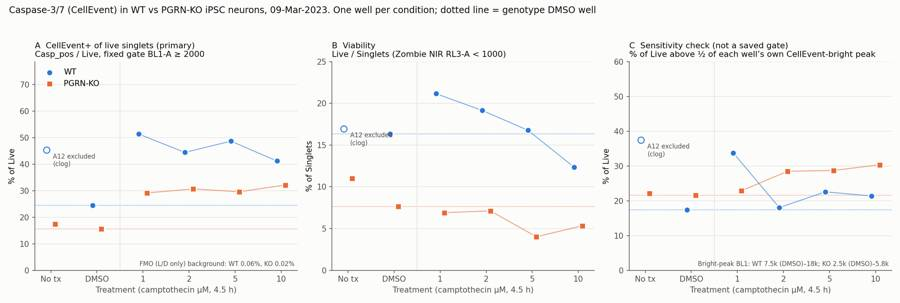
146
tool call · Bash
cd /task/work; sed -i "s/xytext=(8,-4),textcoords='offset points',fontsize=8,color=INK2,va='top')/xytext=(-6,12),textcoords='offset points',fontsize=8,color=INK2,va='bottom',ha='left')/" figure.py && python3 figure.py
147
tool output
(Bash completed with no output)
148
tool call · Read
{
"file_path": "/task/outputs/figure.png"
}149
tool output
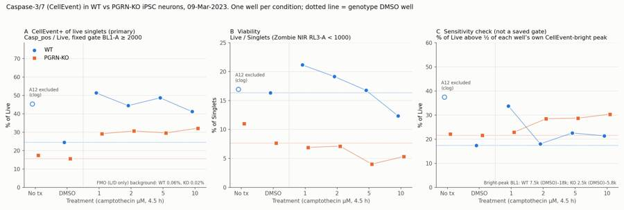
151
agent
Now a gating-check figure from the saved gates, to confirm the gate placement visually.
152
tool call · Bash
cd /task/work; cat > gatefig.py <<'EOF'
import flowkit as fk, pandas as pd, numpy as np, matplotlib
matplotlib.use('Agg'); import matplotlib.pyplot as plt
lay=pd.read_csv('/task/inputs/plate_layout.csv').set_index('well')
gs=fk.parse_gating_xml('/task/outputs/gates.xml')
SING=np.array(gs.get_gate('Singlets').vertices+[gs.get_gate('Singlets').vertices[0]])
def asinh(x,c=200): return np.arcsinh(x/c)/np.log(10)
def inv(y,c=200): return c*np.sinh(y*np.log(10))
wells=['A6','A4','A11','A7','B11','B7']
fig,axes=plt.subplots(4,len(wells),figsize=(4*len(wells),15))
LN=lambda: matplotlib.colors.LogNorm()
for j,wl in enumerate(wells):
s=fk.Sample('/task/inputs/raw/'+lay.loc[wl,'file']); res=gs.gate_sample(s)
ev=s.as_dataframe(source='raw'); ev.columns=[c[0] for c in ev.columns]
cells=res.get_gate_membership('Cells'); sing=res.get_gate_membership('Singlets'); live=res.get_gate_membership('Live')
ax=axes[0,j]; ax.hist2d(ev['FSC-A'],ev['SSC-A'],bins=200,range=[[0,1.06e6],[0,1.06e6]],cmap='viridis',norm=LN())
ax.add_patch(plt.Rectangle((40000,3000),1e6,1037000,fill=False,ec='r',lw=1.5)); ax.set_title(f'{wl} {lay.loc[wl,"sample"]}\nCells {100*cells.mean():.1f}% of all'); ax.set_xlabel('FSC-A'); ax.set_ylabel('SSC-A')
c=ev[cells]; ax=axes[1,j]; ax.hist2d(c['FSC-A'],c['FSC-H'],bins=200,range=[[0,6e5],[0,3e5]],cmap='viridis',norm=LN()); ax.plot(SING[:,0],SING[:,1],'r-')
ax.set_title(f'Singlets {100*sing.sum()/cells.sum():.1f}% of Cells'); ax.set_xlabel('FSC-A'); ax.set_ylabel('FSC-H')
sg=ev[sing]; ax=axes[2,j]; ax.hist2d(asinh(sg['BL1-A']),asinh(sg['RL3-A']),bins=200,range=[[-1,4],[-1,4]],cmap='viridis',norm=LN())
ax.axhline(asinh(1000),color='r'); ax.plot([asinh(2000)]*2,[-1,asinh(1000)],'r-')
ax.set_title(f'Live {100*live.sum()/sing.sum():.1f}% of Singlets'); ax.set_xlabel('BL1-A CellEvent (asinh/200)'); ax.set_ylabel('RL3-A Zombie NIR (asinh/200)')
lv=ev[live]; ax=axes[3,j]; ax.hist2d(asinh(lv['BL1-A']),np.log10(lv['SSC-A']),bins=150,range=[[-0.5,3.5],[3.4,6.05]],cmap='viridis',norm=LN()); ax.axvline(asinh(2000),color='r')
cp=res.get_gate_membership('Casp_pos'); ax.set_title(f'Casp_pos {100*cp.sum()/live.sum():.1f}% of Live'); ax.set_xlabel('BL1-A CellEvent (asinh/200)'); ax.set_ylabel('log10 SSC-A')
plt.tight_layout(); plt.savefig('/task/outputs/gating_check.png',dpi=55)
EOF
python3 gatefig.py153
tool output
(Bash completed with no output)
154
tool call · Read
{
"file_path": "/task/outputs/gating_check.png"
}155
tool output
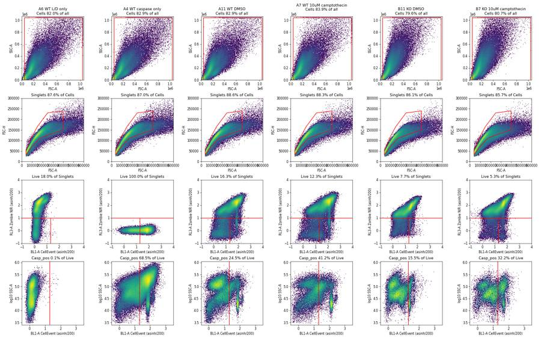
157
agent
Gates look right. Next I'll check that the saved XML reproduces counts.csv exactly, then write the report and answer.json.
158
tool call · Bash
cd /task/work; cat > verify.py <<'EOF'
import flowkit as fk, pandas as pd, numpy as np
gs=fk.parse_gating_xml('/task/outputs/gates.xml')
c=pd.read_csv('/task/outputs/counts.csv')
print(list(c.columns)); print(gs.get_gate_ids())
bad=0
for f in c.file.unique():
s=fk.Sample('/task/inputs/raw/'+f); rep=gs.gate_sample(s).report.set_index('gate_name')
sub=c[c.file==f].set_index('population')
assert sub.loc['all_events','count']==s.event_count
for p in sub.index:
if p=='all_events': continue
if int(rep.loc[p,'count'])!=int(sub.loc[p,'count']): bad+=1; print('MISMATCH',f,p)
par=sub.loc[p,'parent']; exp=100*sub.loc[p,'count']/sub.loc[par,'count']
assert abs(exp-sub.loc[p,'pct_of_parent'])<1e-3
print('mismatches',bad, 'rows',len(c), c.groupby('file').size().unique(), c.groupby('population').role.unique().to_dict())
fl=pd.read_csv('/task/outputs/flags.csv'); print(fl[fl.decision=='exclude'].well.tolist())
cs=pd.read_csv('/task/outputs/condition_summary.csv'); print(cs.condition.is_unique, len(cs))
EOF
python3 verify.py; head -8 /task/outputs/counts.csv159
tool output
['file', 'well', 'population', 'role', 'parent', 'count', 'pct_of_parent']
[('Cells', ('root',)), ('Singlets', ('root', 'Cells')), ('Live', ('root', 'Cells', 'Singlets')), ('Casp_pos', ('root', 'Cells', 'Singlets', 'Live')), ('Dead', ('root', 'Cells', 'Singlets')), ('Dead_Casp_pos', ('root', 'Cells', 'Singlets', 'Dead'))]
mismatches 0 rows 126 [7] {'Casp_pos': array(['marker_positive'], dtype=object), 'Cells': array(['cells'], dtype=object), 'Dead': array(['other'], dtype=object), 'Dead_Casp_pos': array(['other'], dtype=object), 'Live': array(['live'], dtype=object), 'Singlets': array(['singlets'], dtype=object), 'all_events': array(['other'], dtype=object)}
['A12']
True 30
file,well,population,role,parent,count,pct_of_parent
Caspase_WT_KO_optimization_caspase_Group_A2.fcs,A2,all_events,other,none,365736,
Caspase_WT_KO_optimization_caspase_Group_A2.fcs,A2,Cells,cells,all_events,299263,81.8249
Caspase_WT_KO_optimization_caspase_Group_A2.fcs,A2,Singlets,singlets,Cells,256856,85.8295
Caspase_WT_KO_optimization_caspase_Group_A2.fcs,A2,Live,live,Singlets,256853,99.9988
Caspase_WT_KO_optimization_caspase_Group_A2.fcs,A2,Casp_pos,marker_positive,Live,147,0.0572
Caspase_WT_KO_optimization_caspase_Group_A2.fcs,A2,Dead,other,Singlets,3,0.0012
Caspase_WT_KO_optimization_caspase_Group_A2.fcs,A2,Dead_Casp_pos,other,Dead,0,0.0161
tool call · Bash
cd /task/work; python3 - <<'EOF'
import pandas as pd
c=pd.read_csv('/task/outputs/counts.csv'); w=c.pivot(index='well',columns='population',values='count')
lay=pd.read_csv('/task/inputs/plate_layout.csv').set_index('well')
s=pd.read_csv('sensitivity.csv').set_index('well')
fl=pd.read_csv('/task/outputs/flags.csv').set_index('well')
print('| Well | Sample | Singlets | Live (% Singlets) | Casp_pos (% Live) | Dead_Casp_pos (% Dead) | CellEvent-bright peak BL1 | % Live > ½ peak (sensitivity) | Decision |')
print('|---|---|---|---|---|---|---|---|---|')
for wl in lay.index:
pk=s.loc[wl,'bright_peak_BL1']; hp=s.loc[wl,'pct_live_above_half_peak']
print(f"| {wl} | {lay.loc[wl,'sample']} | {w.loc[wl,'Singlets']:,} | {w.loc[wl,'Live']:,} ({100*w.loc[wl,'Live']/w.loc[wl,'Singlets']:.1f}%) | {w.loc[wl,'Casp_pos']:,} ({100*w.loc[wl,'Casp_pos']/w.loc[wl,'Live']:.1f}%) | {100*w.loc[wl,'Dead_Casp_pos']/max(w.loc[wl,'Dead'],1):.1f}% | {'' if pd.isna(pk) else f'{pk:,.0f}'} | {'' if pd.isna(hp) else f'{hp:.1f}%'} | {fl.loc[wl,'decision']} |")
EOF162
tool output
| Well | Sample | Singlets | Live (% Singlets) | Casp_pos (% Live) | Dead_Casp_pos (% Dead) | CellEvent-bright peak BL1 | % Live > ½ peak (sensitivity) | Decision | |---|---|---|---|---|---|---|---|---| | A2 | WT no stain | 256,856 | 256,853 (100.0%) | 147 (0.1%) | 0.0% | | | keep | | A4 | WT caspase only | 317,864 | 317,863 (100.0%) | 217,583 (68.5%) | 100.0% | | | keep | | A6 | WT L/D only | 296,309 | 53,286 (18.0%) | 32 (0.1%) | 0.1% | | | keep | | A7 | WT 10uM camptothecin | 292,952 | 36,162 (12.3%) | 14,903 (41.2%) | 83.4% | 12,445 | 21.4% | keep | | A8 | WT 5uM camptothecin | 289,540 | 48,533 (16.8%) | 23,636 (48.7%) | 85.9% | 18,408 | 22.6% | keep_with_note | | A9 | WT 2uM camptothecin | 311,318 | 59,620 (19.2%) | 26,509 (44.5%) | 83.3% | 15,311 | 18.0% | keep | | A10 | WT 1uM camptothecin | 381,463 | 80,695 (21.2%) | 41,452 (51.4%) | 83.6% | 16,406 | 33.8% | keep | | A11 | WT DMSO | 277,147 | 45,270 (16.3%) | 11,084 (24.5%) | 77.0% | 7,499 | 17.4% | keep | | A12 | WT no treatment | 288,972 | 48,915 (16.9%) | 22,171 (45.3%) | 82.4% | 6,683 | 37.4% | exclude | | B2 | KO no stain | 300,179 | 300,092 (100.0%) | 1,548 (0.5%) | 16.1% | | | keep | | B4 | KO caspase only | 438,587 | 438,576 (100.0%) | 259,782 (59.2%) | 63.6% | | | keep | | B6 | KO L/D only | 322,767 | 25,316 (7.8%) | 6 (0.0%) | 0.2% | | | keep | | B7 | KO 10uM camptothecin | 423,764 | 22,609 (5.3%) | 7,271 (32.2%) | 68.6% | 4,519 | 30.3% | keep | | B8 | KO 5uM camptothecin | 355,318 | 14,277 (4.0%) | 4,230 (29.6%) | 68.5% | 4,217 | 28.7% | keep_with_note | | B9 | KO 2uM camptothecin | 303,748 | 21,626 (7.1%) | 6,634 (30.7%) | 65.2% | 4,624 | 28.5% | keep | | B10 | KO 1uM camptothecin | 381,636 | 26,336 (6.9%) | 7,684 (29.2%) | 70.9% | 5,821 | 22.9% | keep | | B11 | KO DMSO | 384,543 | 29,439 (7.7%) | 4,574 (15.5%) | 56.3% | 2,541 | 21.5% | keep | | B12 | KO no treatment | 374,721 | 41,264 (11.0%) | 7,166 (17.4%) | 60.2% | 2,723 | 22.1% | keep |
164
tool call · Bash
cd /task/work; cat > answer.py <<'EOF'
import json, pandas as pd
cs=pd.read_csv('/task/outputs/condition_summary.csv').set_index('condition')
fl=pd.read_csv('/task/outputs/flags.csv')
A={
"question": "Is there a difference in caspase-3/7 activity in PGRN-KO compared with WT PGP1 iPSC-derived neurons (with camptothecin as an apoptosis inducer), measured by CellEvent Caspase-3/7 flow cytometry with Zombie NIR viability staining?",
"comparisons": [
{"comparison":"Genotype at vehicle baseline: % CellEvent+ of live singlets, KO DMSO vs WT DMSO","a":"WT_DMSO_CaspPos_pct_Live","b":"KO_DMSO_CaspPos_pct_Live","direction":"decrease",
"magnitude":"15.5% vs 24.5% of Live (-9.0 percentage points, 0.63x); one well each. Not robust: KO CellEvent-bright cells are ~3x dimmer (peak BL1 2,541 vs 7,499), and with a gate set relative to each well's own bright peak the order reverses (21.5% vs 17.4%)","confidence":"low"},
{"comparison":"Genotype under camptothecin (1-10 uM pooled): % CellEvent+ of live singlets, KO vs WT","a":"WT_CPTall_CaspPos_pct_Live","b":"KO_CPTall_CaspPos_pct_Live","direction":"decrease",
"magnitude":"30.4 +/- 1.3% vs 46.4 +/- 4.5% of Live (-16.0 percentage points; SD is across 4 doses, not replicates). Peak-relative gate gives 27.6% vs 23.9% (reversed)","confidence":"low"},
{"comparison":"Camptothecin response in WT: CPT (1-10 uM pooled) vs DMSO","a":"WT_DMSO_CaspPos_pct_Live","b":"WT_CPTall_CaspPos_pct_Live","direction":"increase",
"magnitude":"24.5% -> 46.4 +/- 4.5% of Live (1.90 +/- 0.18-fold; all 4 doses 41.2-51.4%; flat, non-monotonic dose response)","confidence":"medium"},
{"comparison":"Camptothecin response in KO: CPT (1-10 uM pooled) vs DMSO","a":"KO_DMSO_CaspPos_pct_Live","b":"KO_CPTall_CaspPos_pct_Live","direction":"increase",
"magnitude":"15.5% -> 30.4 +/- 1.3% of Live (1.96 +/- 0.09-fold; all 4 doses 29.2-32.2%)","confidence":"medium"},
{"comparison":"Relative camptothecin response, KO vs WT (fold over own DMSO well)","a":"WT_CPTall_CaspPos_fold_vs_DMSO","b":"KO_CPTall_CaspPos_fold_vs_DMSO","direction":"no_clear_change",
"magnitude":"1.96 +/- 0.09-fold vs 1.90 +/- 0.18-fold (difference 0.06-fold)","confidence":"low"},
{"comparison":"Viability at vehicle baseline: % Zombie NIR- of singlets, KO DMSO vs WT DMSO","a":"WT_DMSO_Live_pct_Singlets","b":"KO_DMSO_Live_pct_Singlets","direction":"decrease",
"magnitude":"7.7% vs 16.3% live (0.47x); every stained KO well (4.0-11.0%) was below every stained WT well (12.3-21.2%), including the L/D-only controls (7.8% vs 18.0%)","confidence":"medium"},
{"comparison":"Vehicle check in KO: DMSO vs no treatment","a":"KO_NoTx_CaspPos_pct_Live","b":"KO_DMSO_CaspPos_pct_Live","direction":"no_clear_change",
"magnitude":"15.5% vs 17.4% of Live (-1.8 percentage points); WT has no usable untreated well (A12 excluded)","confidence":"low"}
],
"overall_answer": "no: this run does not show the expected increase in caspase-3/7 activity in PGRN-KO neurons. On the fixed gate, KO had fewer CellEvent+ live cells than WT (DMSO 15.5% vs 24.5%; camptothecin 29-32% vs 41-51%). That gap comes from a ~3-fold dimmer CellEvent signal in the KO wells and reverses with a peak-relative gate (21.5% vs 17.4%). Camptothecin raised the CellEvent+ fraction about 1.9-2.0-fold in both genotypes. KO wells did have about half the viable fraction of WT (7.7% vs 16.3% in DMSO). But with one well per condition, genotype confounded with plate, and 80-96% of cells dead after harvest in every stained well, no genotype difference in caspase activity can be claimed.",
"assay_verdict": "needs_optimisation",
"next_action": "repeat_with_change",
"next_change": {"what":"Neuron harvest/dissociation before staining (procedure step 'Add 150uL accutase incubate for 5-10min')",
"from":"Accutase 150 uL for 5-10 min, quenched with 75 uL FBS; this left only 4-21% Zombie NIR- singlets in every stained well, including vehicle and L/D-only controls",
"to":"Gentle papain-based neuronal dissociation (papain ~20 U/mL + DNase I, 37 C, 15-20 min, gentle trituration, ovomucoid/inhibitor stop, cells kept on ice until Zombie). Pilot on spare DMSO wells and accept the method only at >=50% Zombie NIR- singlets. Then rerun with WT and KO on the same plate and >=3 wells per condition",
"why":"Harvest-induced death dominates the readout. 82-84% of WT and 92% of KO singlets were Zombie NIR+ before any camptothecin effect (L/D-only and DMSO wells), so caspase activity is measured on a small, genotype-biased surviving subset (KO 4-11% vs WT 12-21% live). That makes a caspase comparison between genotypes uninterpretable."},
"excluded_wells": sorted(fl[fl.decision=='exclude'].well.tolist()),
"caveats": [
"One well per condition (n=1); there are no replicate wells, so no between-well variance or statistics. The SDs for pooled camptothecin are across the four doses, not replicates.",
"Genotype is confounded with culture plate (separate WT and KO plate maps) and with acquisition block (row A 15:13-15:24, row B 15:24-15:35).",
"Viability was very low in every stained well (Zombie NIR- 4.0-21.2% of singlets, including L/D-only and DMSO), so the Live denominator is a small, selected survivor population. It was smaller in KO.",
"The CellEvent-bright (caspase+) population was ~3-fold dimmer in KO wells (peak BL1-A 2,541-5,821 vs 7,499-18,408 in WT, including the caspase-only controls). The KO<WT result on the fixed BL1-A>=2000 gate therefore depends on the threshold and reverses with a gate set relative to each well's peak.",
"The CellEvent-bright peak fell ~0.1 log10 (~20%) within every 47-s acquisition (unfixed cells, signal still changing), adding drift to intensity-based gating.",
"A12 (WT no treatment) was excluded for a clog, so WT has no untreated control. A11 DMSO is the WT baseline.",
"Vehicle was not dose-matched: DMSO control 10 uL per 500 uL vs 2-20 uL of camptothecin stock (solvent not stated in the plan).",
"4.5-h camptothecin gave a flat, non-m
… [630 more characters not shown]165
tool output
WT_DMSO_CaspPos_pct_Live 24.484 -> KO_DMSO_CaspPos_pct_Live 15.537 decrease WT_CPTall_CaspPos_pct_Live 46.436 -> KO_CPTall_CaspPos_pct_Live 30.41 decrease WT_DMSO_CaspPos_pct_Live 24.484 -> WT_CPTall_CaspPos_pct_Live 46.436 increase KO_DMSO_CaspPos_pct_Live 15.537 -> KO_CPTall_CaspPos_pct_Live 30.41 increase WT_CPTall_CaspPos_fold_vs_DMSO 1.897 -> KO_CPTall_CaspPos_fold_vs_DMSO 1.957 no_clear_change WT_DMSO_Live_pct_Singlets 16.334 -> KO_DMSO_Live_pct_Singlets 7.656 decrease KO_NoTx_CaspPos_pct_Live 17.366 -> KO_DMSO_CaspPos_pct_Live 15.537 no_clear_change
167
tool call · Bash
cd /task/work; sed -i 's/and 80-96% of cells dead after harvest/and 79-96% of singlets dead after harvest/' answer.py && python3 answer.py >/dev/null && grep -o "79-96%[^,]*" /task/outputs/answer.json
168
tool output
79-96% of singlets dead after harvest in every stained well
169
agent
Now the report.
170
tool call · Write
{
"file_path": "/task/outputs/report.md",
"content": "# EXP23000279 \u2014 CellEvent caspase-3/7 flow assay, WT vs PGRN-KO iPSC neurons (acquired 09-Mar-2023)\n\n## Question\n\nFrom the plan: in this first optimisation run, is there a difference in caspase activity in PGRN-KO compared with WT PGP1 iPSC-derived neurons? Camptothecin (1, 2, 5, 10 \u00b5M, 4.5 h) was the apoptosis inducer, with DMSO and no-treatment wells as baselines. Caspase-3/7 was measured with CellEvent Caspase-3/7 Green (BL1-A) and viability with Zombie NIR (RL3-A) on an Attune NxT, unfixed.\n\n## Methods\n\n- **Data.** 18 FCS 3.1 files (one per well: A2\u2013A12 WT, B2\u2013B12 KO), ~366k\u2013612k events each, ~47 s per well.\n - Only one of each duplicate control column was acquired (A2/A4/A6, B2/B4/B6).\n - Well identity was checked against `$WELLID` and acquisition order; both match `plate_layout.csv`.\n- **Software.** FlowKit 1.2.3 with one `GatingStrategy` for all wells (`gates.xml`). Counts in `counts.csv` come from `gate_sample()` on the re-loaded XML. A re-check reproduced all 108 gated counts with zero mismatches.\n- **Compensation: none (`uncompensated`).**\n - The file spillover matrix is the identity.\n - The single-stain controls show no measurable cross-talk. In the caspase-only wells, RL3-A median is 18 vs 17 unstained. In the Live gate of the L/D-only wells, BL1-A median is 72 vs 115 unstained.\n- **Gates** (all on raw channel values; FlowKit rectangle min is inclusive, max exclusive):\n\n| Population | Parent | Gate | Rationale |\n|---|---|---|---|\n| `Cells` (cells) | all_events | Rectangle FSC-A 40,000\u20131,040,000; SSC-A 3,000\u20131,040,000 | Removes threshold-level debris (FSC trigger 25,000) and saturated scatter events. It keeps the shrunken apoptotic cluster (FSC-A \u2248 50\u201390k, SSC-A \u2248 10\u201340k) that holds most CellEvent-bright live cells. |\n| `Singlets` (singlets) | Cells | Polygon on FSC-A vs FSC-H following the main band (FSC-H plateaus at ~150\u2013200k for FSC-A > 250k) | Excludes wide-pulse doublets and aggregates. Keeps 79.6\u201391.9% of Cells. |\n| `Live` (live) | Singlets | RL3-A < 1000 | Sits in the valley between the Zombie NIR-negative peak and the dead peak (~10,000\u201330,000). Unstained 99.9th percentile is 215\u2013251. |\n| `Dead` (other) | Singlets | RL3-A \u2265 1000 | Complement of Live; used for viability. |\n| `Casp_pos` (marker_positive) | Live | BL1-A \u2265 2000 | In the L/D-only FMO (no CellEvent), 0.06% (WT) and 0.02% (KO) of Live cells exceed 2000. The threshold sits below the dimmest discrete CellEvent-bright population on the plate (KO DMSO peak BL1 \u2248 2,540). |\n| `Dead_Casp_pos` (other) | Dead | BL1-A \u2265 2000 | CellEvent+ among dead cells (late apoptotic); descriptive only. |\n\n- **Primary metric.** `Casp_pos / Live` \u00d7 100: % CellEvent+ among viable singlets (early-apoptotic fraction).\n- **Secondary metric.** `Live / Singlets` \u00d7 100 (viability). The CPT response is also reported as fold over the genotype's own DMSO well.\n- **\"CPTall\" rows** pool the four camptothecin doses. Their SD is between doses, not between replicates. Every condition is a single well.\n- **Sensitivity check** (exploratory; not a saved gate and not in `counts.csv`).\n - Within the saved Live gate, I located each well's CellEvent-bright peak: the mode of BL1-A among Live events with SSC-A < 40k.\n - I then counted Live events above half that peak (`figure.png` panel C).\n- **QC.** Per-well checks:\n - event rate per second over time (clog or ran-dry detection)\n - coincident-event fraction\n - saturation (\u22642% of events on any scatter channel; fluorescence \u22640.005%)\n - behaviour of the controls\n- **Gating check.** Plots for representative wells are in `gating_check.png`.\n\n## Results\n\n**QC.**\n- **A12 (WT no treatment): excluded (clog).**\n - The first 20 s gave only 2,824 events (0\u2013757/s), followed by a burst of up to 22,923 events/s and then ~13,000/s. Other wells were steady at 7,968\u201313,176/s with 1-s CV 3.4\u201311.6%; A12's was 93.2%.\n - Coincident events were 14.1%, the highest on the plate.\n - After the clog cleared, A12 still disagrees with WT DMSO (all-event SSC-A median 156,074 vs 118,698; Casp_pos 45.3% vs 24.5% of Live). In contrast, KO no-treatment and KO DMSO agree (17.4% vs 15.5%).\n- **A8 and B8: kept with a note.** Each had a 0.5-s event burst (<1% of events) that left the gated metrics unchanged.\n- **Controls behaved as expected.**\n - Unstained: Casp_pos 0.1% (WT) and 0.5% (KO) of singlets.\n - Caspase-only: a bright CellEvent population, no RL3 signal.\n - L/D-only: clear bimodal Zombie NIR, BL1 at autofluorescence.\n - In unstained and caspase-only wells, Live equals all singlets because there is no Zombie stain.\n\n**Per-well results** (all wells; A12 shown for transparency only):\n\n| Well | Sample | Singlets | Live (% Singlets) | Casp_pos (% Live) | Dead_Casp_pos (% Dead) | CellEvent-bright peak BL1 | % Live > \u00bd peak (sensitivity) | Decision |\n|---|---|---|---|---|---|---|---|---|\n| A2 | WT no stain | 256,856 | 256,853 (100.0%) | 147 (0.1%) | 0.0% | | | keep |\n| A4 | WT caspase only | 317,864 | 317,863 (100.0%) | 217,583 (68.5%) | 100.0% | | | keep |\n| A6 | WT L/D only | 296,309 | 53,286 (18.0%) | 32 (0.1%) | 0.1% | | | keep |\n| A7 | WT 10uM camptothecin | 292,952 | 36,162 (12.3%) | 14,903 (41.2%) | 83.4% | 12,445 | 21.4% | keep |\n| A8 | WT 5uM camptothecin | 289,540 | 48,533 (16.8%) | 23,636 (48.7%) | 85.9% | 18,408 | 22.6% | keep_with_note |\n| A9 | WT 2uM camptothecin | 311,318 | 59,620 (19.2%) | 26,509 (44.5%) | 83.3% | 15,311 | 18.0% | keep |\n| A10 | WT 1uM camptothecin | 381,463 | 80,695 (21.2%) | 41,452 (51.4%) | 83.6% | 16,406 | 33.8% | keep |\n| A11 | WT DMSO | 277,147 | 45,270 (16.3%) | 11,084 (24.5%) | 77.0% | 7,499 | 17.4% | keep |\n| A12 | WT no treatment | 288,972 | 48,915 (16.9%) | 22,171 (45.3%) | 82.4% | 6,683 | 37.4% | exclude |\n| B2 | KO no s
… [7,199 more characters not shown]171
tool output
File created successfully at: /task/outputs/report.md (file state is current in your context — no need to Read it back)
173
tool call · Bash
cd /task/work; python3 -c "
import pandas as pd
c=pd.read_csv('/task/outputs/counts.csv'); s=c[c.population=='Singlets'].pct_of_parent; ce=c[c.population=='Cells'].pct_of_parent
print(s.min(),s.max(),ce.min(),ce.max())"174
tool output
82.6213 91.8954 78.9946 85.4992
175
tool call · Bash
cd /task/outputs; sed -i 's/Keeps 79.6–91.9% of Cells./Keeps 82.6–91.9% of Cells (Cells are 79.0–85.5% of all events)./; s/saturation (≤2% of events on any scatter channel; fluorescence ≤0.005%)/saturation (≤2.1% of events on any scatter channel; fluorescence ≤0.005%)/' report.md; grep -n "82.6–91.9\|≤2.1%" report.md; python3 -c "import json;d=json.load(open('answer.json'));print(d['excluded_wells'],d['next_action'],d['assay_verdict'])"; ls -la /task/outputs176
tool output
21:| `Singlets` (singlets) | Cells | Polygon on FSC-A vs FSC-H following the main band (FSC-H plateaus at ~150–200k for FSC-A > 250k) | Excludes wide-pulse doublets and aggregates. Keeps 82.6–91.9% of Cells (Cells are 79.0–85.5% of all events). | 36: - saturation (≤2.1% of events on any scatter channel; fluorescence ≤0.005%) ['A12'] repeat_with_change needs_optimisation total 680 drwxr-xr-x 2 root root 4096 Nov 10 17:22 . drwxr-xr-x 5 root root 4096 Nov 10 17:08 .. -rw-r--r-- 1 root root 6537 Nov 10 17:21 answer.json -rw-r--r-- 1 root root 4395 Nov 10 17:19 condition_summary.csv -rw-r--r-- 1 root root 11138 Nov 10 17:17 counts.csv -rw-r--r-- 1 root root 175246 Nov 10 17:20 figure.png -rw-r--r-- 1 root root 2226 Nov 10 17:19 flags.csv -rw-r--r-- 1 root root 3599 Nov 10 17:16 gates.xml -rw-r--r-- 1 root root 456874 Nov 10 17:20 gating_check.png -rw-r--r-- 1 root root 12821 Nov 10 17:22 report.md [This command modified 1 file you've previously read: report.md. Call Read before editing.]
178
tool call · Bash
cd /task/work; sed -i 's/Post-clog population is also discordant with WT DMSO A11: SSC-A median/Post-clog population is also discordant with WT DMSO A11: all-event SSC-A median/' flags.py && python3 flags.py >/dev/null && grep -c "all-event SSC-A" /task/outputs/flags.csv; grep -n "^## " /task/outputs/report.md; python3 -c "import flowkit as fk; fk.parse_gating_xml('/task/outputs/gates.xml'); print('gates reload ok')"179
tool output
1 3:## Question 7:## Methods 40:## Results 101:## Conclusion 116:## Caveats 128:## Recommendation gates reload ok
181
agent
The plate doesn't answer the question yet. On my pre-set gate, PGRN-KO neurons had fewer caspase-positive live cells than WT, not more, but that result isn't robust. My verdict is that the assay needs optimisation, and the next step is to repeat it with a gentler dissociation. All seven deliverables are in `/task/outputs/`, and the saved gates reproduce every count in `counts.csv` exactly.
**Gating.** Cells (debris and saturated events removed) → singlets → live (Zombie NIR below 1,000) → caspase-positive (CellEvent at or above 2,000). I used no compensation: the file's spillover matrix is the identity and the single-stain controls show no cross-talk. The 2,000 cut-off lets through only 0.02–0.06% background in the controls stained without CellEvent, and it sits just below the dimmest caspase-bright population on the plate.
**QC.**
- **A12 (WT no treatment) is excluded as a clog.** The first 20 s produced only about 2,800 events, followed by a burst of up to about 23,000 events/s. Even after the clog cleared, its profile disagrees with the WT DMSO well. WT therefore has no untreated well, and WT DMSO (A11) is its baseline.
- **A8 and B8 are kept with a note.** Each had a half-second event burst (under 1% of events) that didn't change the results.
- **Controls** all behaved as expected.
**Results** (percentages are caspase-positive cells among live cells):
| | WT | PGRN-KO |
|---|---|---|
| DMSO | 24.5% | 15.5% |
| Camptothecin (mean of 4 doses) | 46.4% | 30.4% |
| Fold increase with camptothecin | 1.90× | 1.96× |
| Live cells, DMSO well | 16.3% | 7.7% |
- **Camptothecin worked in both lines.** It roughly doubled the caspase-positive fraction, with no dose-response between 1 and 10 µM at 4.5 h.
- **The KO-lower result depends on the threshold.** The KO wells' caspase-bright cells are about 3× dimmer (peak about 2,500 vs 7,500 in DMSO), so one fixed threshold favours WT. Setting the threshold relative to each well's own bright peak reverses the order (DMSO: KO 21.5% vs WT 17.4%). I rated the genotype comparisons low confidence for this reason.
- **Viability was very poor and worse in KO.** Every stained KO well had fewer live cells than every WT well (4–11% vs 12–21%). Across all stained wells, 79–96% of cells were dead, including the untreated controls, so the harvest itself is killing most neurons.
Several things stop any of this being attributed to PGRN loss:
- each condition is a single well;
- WT and KO were grown on separate plates and run in separate blocks;
- the live-cell denominator is a small group of survivors;
- the vehicle volume wasn't matched to the drug doses.
**Recommendation.**
1. Replace the 5–10 min accutase lift with a gentle papain-based dissociation. Pilot it on spare DMSO wells and accept it only if at least 50% of cells come out live.
2. Then rerun with WT and KO on the same plate, at least 3 wells per condition, and matched vehicle.
3. If dissociation can't reach that viability, measure caspase in the intact culture instead (e.g. live-cell imaging).
Files are in `/task/outputs/`:
- `gates.xml`
- `counts.csv`
- `flags.csv`
- `condition_summary.csv`
- `figure.png`
- `report.md`
- `answer.json`
- `gating_check.png` (an extra plot of the gates on representative wells)
final result
The plate doesn't answer the question yet. On my pre-set gate, PGRN-KO neurons had fewer caspase-positive live cells than WT, not more, but that result isn't robust. My verdict is that the assay needs optimisation, and the next step is to repeat it with a gentler dissociation. All seven deliverables are in `/task/outputs/`, and the saved gates reproduce every count in `counts.csv` exactly. **Gating.** Cells (debris and saturated events removed) → singlets → live (Zombie NIR below 1,000) → caspase-positive (CellEvent at or above 2,000). I used no compensation: the file's spillover matrix is the identity and the single-stain controls show no cross-talk. The 2,000 cut-off lets through only 0.02–0.06% background in the controls stained without CellEvent, and it sits just below the dimmest caspase-bright population on the plate. **QC.** - **A12 (WT no treatment) is excluded as a clog.** The first 20 s produced only about 2,800 events, followed by a burst of up to about 23,000 events/s. Even after the clog cleared, its profile disagrees with the WT DMSO well. WT therefore has no untreated well, and WT DMSO (A11) is its baseline. - **A8 and B8 are kept with a note.** Each had a half-second event burst (under 1% of events) that didn't change the results. - **Controls** all behaved as expected. **Results** (percentages are caspase-positive cells among live cells): | | WT | PGRN-KO | |---|---|---| | DMSO | 24.5% | 15.5% | | Camptothecin (mean of 4 doses) | 46.4% | 30.4% | | Fold increase with camptothecin | 1.90× | 1.96× | | Live cells, DMSO well | 16.3% | 7.7% | - **Camptothecin worked in both lines.** It roughly doubled the caspase-positive fraction, with no dose-response between 1 and 10 µM at 4.5 h. - **The KO-lower result depends on the threshold.** The KO wells' caspase-bright cells are about 3× dimmer (peak about 2,500 vs 7,500 in DMSO), so one fixed threshold favours WT. Setting the threshold relative to each well's own bright peak reverses the order (DMSO: KO 21.5% vs WT 17.4%). I rated the genotype comparisons low confidence for this reason. - **Viability was very poor and worse in KO.** Every stained KO well had fewer live cells than every WT well (4–11% vs 12–21%). Across all stained wells, 79–96% of cells were dead, including the untreated controls, so the harvest itself is killing most neurons. Several things stop any of this being attributed to PGRN loss: - each condition is a single well; - WT and KO were grown on separate plates and run in separate blocks; - the live-cell denominator is a small group of survivors; - the vehicle volume wasn't matched to the drug doses. **Recommendation.** 1. Replace the 5–10 min accutase lift with a gentle papain-based dissociation. Pilot it on spare DMSO wells and accept it only if at least 50% of cells come out live. 2. Then rerun with WT and KO on the same plate, at least 3 wells per condition, and matched vehicle. 3. If dissociation can't reach that viability, measure caspase in the intact culture instead (e.g. live-cell imaging). Files are in `/task/outputs/`: - `gates.xml` - `counts.csv` - `flags.csv` - `condition_summary.csv` - `figure.png` - `report.md` - `answer.json` - `gating_check.png` (an extra plot of the gates on representative wells)